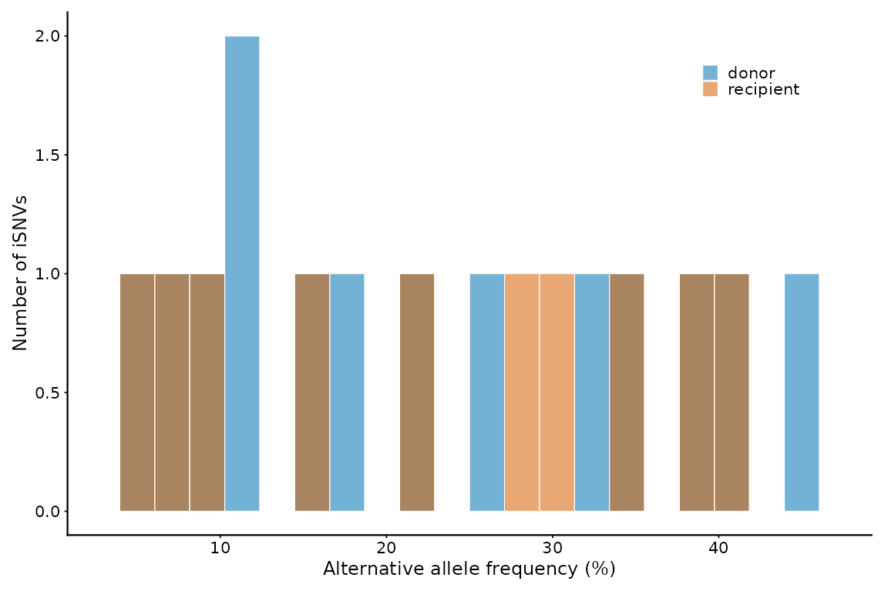
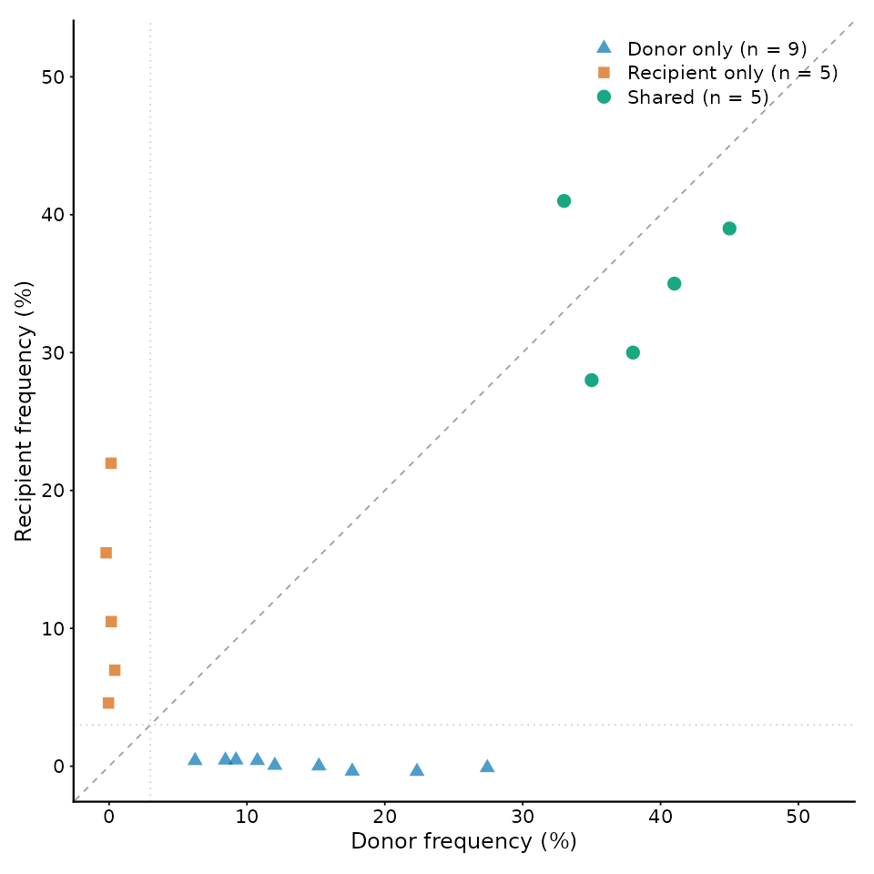
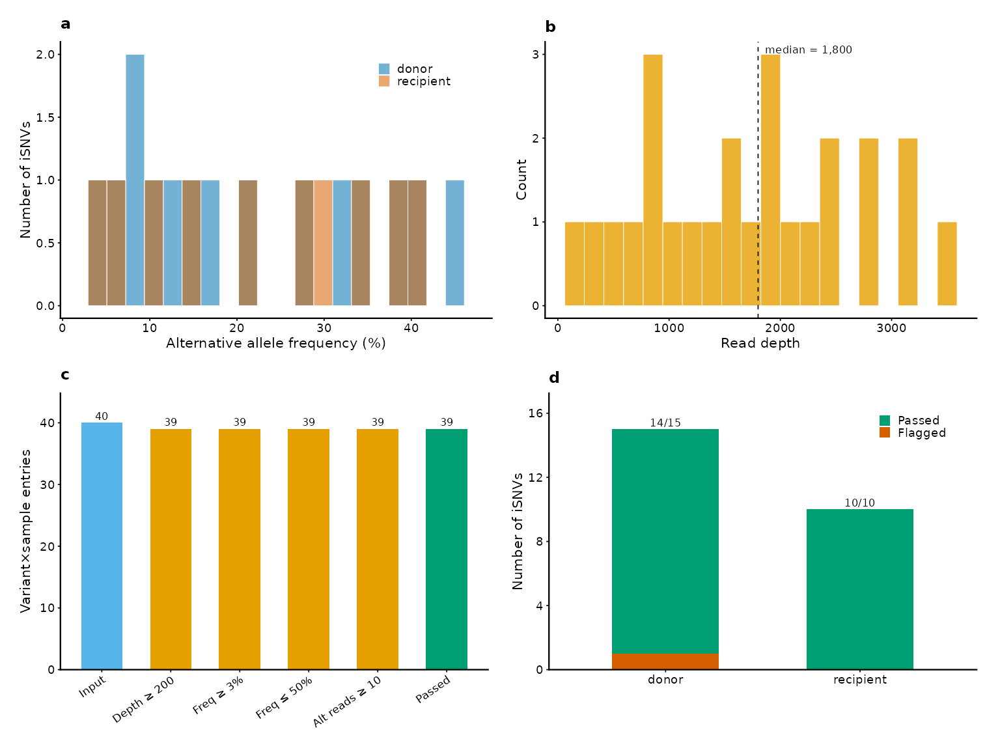
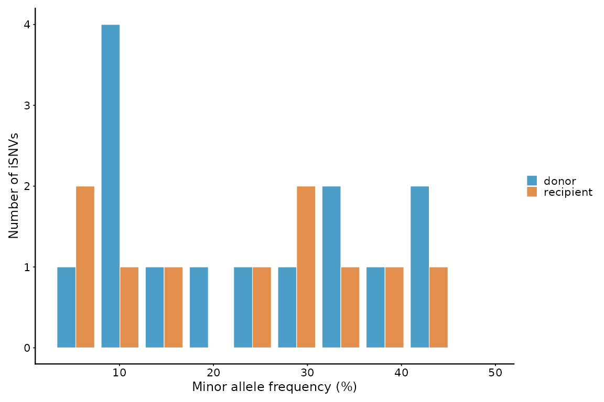
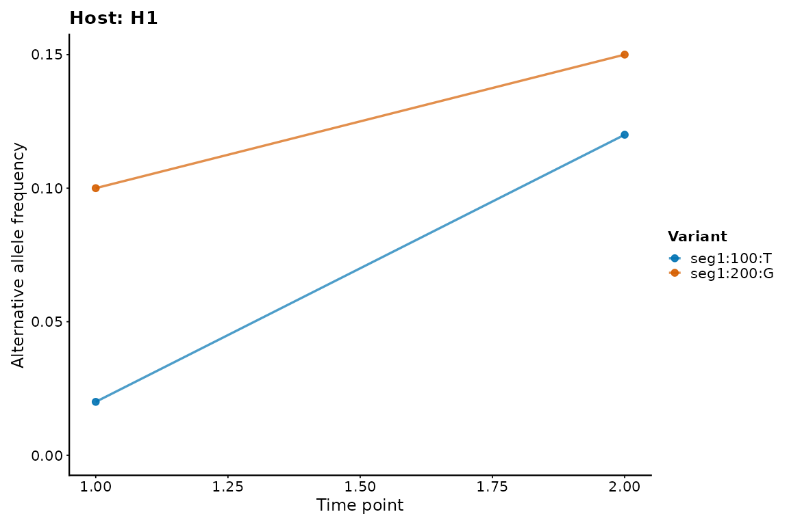

Introduction to WithinHostExperiment
Cuiwei Gao
2026-11-26
Source:vignettes/WithinHostExperiment.Rmd
WithinHostExperiment.RmdIntroduction
This vignette is written as teaching material. It assumes that you can read R code and that you have met a table of variant calls before, but it assumes nothing about population genetics or about Bioconductor containers. Terms are defined where they are introduced, and the Glossary near the end collects the definitions in one place.
What an iSNV is
When a pathogen replicates inside one host, its genome is copied imperfectly. After a few days the host carries not one genome but a population of closely related genomes. If a sample from that host is sequenced deeply, most positions give reads that all agree, while at a few positions some reads carry one base and some carry another. Such a position is an intra-host single nucleotide variant, abbreviated iSNV: a single-base difference that segregates within one host rather than between hosts.
Two numbers describe an iSNV. The allele frequency is the proportion of reads carrying the non-reference base, so a frequency of 0.08 means that 8% of the reads at that position disagree with the reference. The read depth is how many reads covered the position at all. The two are inseparable: 8% of 2,000 reads is 160 independent observations, while 8% of 25 reads is two reads and could easily be sequencing error. Within-host variation lives at low frequencies, which is exactly where sequencing and amplification artefacts also live, so an analysis that does not carry depth alongside frequency cannot tell the two apart (McCrone and Lauring 2016).
What this package is for
Researchers studying within-host pathogen evolution work with tools that do not fit together. Variant callers such as iVar, LoFreq and Freebayes write their output in different formats. Quality control is usually done by ad hoc scripts, which delete the calls that fail a threshold and so prevent any re-analysis under another threshold. Donor and recipient samples, technical replicates and sampling days are tracked in spreadsheets beside the data rather than in the data.
WithinHostExperiment brings these together in one place.
It provides:
- a container built on SummarizedExperiment, which keeps the call matrix, the genomic coordinates, the sample metadata and the quality-control history in one object;
- replicate-aware quality control that flags rather than deletes, so that every call survives for re-analysis;
- within-host diversity, site frequency spectra, neutrality statistics and a within-host selection ratio;
- standardised export for downstream transmission bottleneck estimation.
What this package does not do
The package works one site at a time. It does not reconstruct haplotypes, the full sequences of individual genomes, does not separate a co-infection from genuine within-host diversity, and does not fit drift-aware selection models. The section on scope and limitations sets out each of these, with pointers to tools that do them.
Why Bioconductor
The package works on high-throughput sequencing data, extends
RangedSummarizedExperiment, and reads and writes
GRanges, VRanges and the objects of VariantAnnotation
rather than containers of its own, so it belongs with the packages it
builds on. Its quality-control steps flag rather than delete and record
each step on the object, which is what a reproducible Bioconductor
workflow needs from them.
A warning about the example numbers
Every data file used below is synthetic, with one exception: the worked example on real data uses two small per-sample tables from Bendall et al. (2023), which are real but tiny. The synthetic files were written to exercise the code paths, not to resemble an infection. Their frequencies, diversity indices, bottleneck estimates and selection ratios therefore show the form of each output and carry no biological meaning whatever. We say so again at each result, because a number printed by a vignette is easily mistaken for a finding.
Installation
The package is distributed through Bioconductor, which keeps every
package in a release aligned to one version of R, so that a workflow
built today can be rebuilt later. The installer is
BiocManager, a small CRAN package that resolves the right
Bioconductor release for the R you are running; installing a
Bioconductor package with install.packages() instead will
usually fail or fetch a mismatched version.
The chunk below installs BiocManager if it is missing,
then installs this package and its dependencies. It is not evaluated
when the vignette is built, since the package is already installed at
that point.
if (!requireNamespace("BiocManager", quietly = TRUE))
install.packages("BiocManager")
BiocManager::install("WithinHostExperiment")BiocManager::install() prints the packages it will fetch
and then the usual download and compilation messages. If it reports that
your Bioconductor version is out of date, run
BiocManager::install(version = ...) for the release that
matches your R, or update R first. The README describes how to obtain
the development version, which is useful only if you need a change that
has not yet reached a release.
Once installed, the package is attached like any other. Attaching it
also makes the S4 generics and the show methods used
throughout this vignette available.
A silent return means success. The examples below also use
GenomicRanges for genomic intervals, so we attach that too;
everything else is called with the :: operator so that you
can see which package each function comes from.
Again nothing is printed. We are now ready to look at the container itself.
The WithinHostExperiment object
A WithinHostExperiment extends
RangedSummarizedExperiment, the standard Bioconductor
container for a rectangle of measurements. Three ideas carry over. The
rows are features, here variant sites, and their
coordinates live in rowRanges() as a GRanges.
The columns are samples, and their metadata lives in
colData() as a table with one row per sample. The
assays are matrices of the same shape, rows by columns,
one matrix per measured quantity, reached with
assay(x, "name"). Because every matrix shares one set of
rows and one set of columns, subsetting the object subsets the
coordinates, the sample table and every matrix together, and they cannot
fall out of step.
The package ships a small synthetic example so that the structure can
be inspected without importing anything. Printing an object calls its
show method, which gives a summary rather than the
contents.
data(example_whe)
example_whe
#> WithinHostExperiment with 28 variant sites and 3 samples
#> assays(5): altFreq, totalDepth, refCount, altCount, qcPass
#> qcLog: 0 filtering step(s)
#> transmission pairs: 1The first line gives the shape: 28 variant sites by 3 samples. The
second lists the five assays. The show method then adds two
lines of its own. qcLog reports how many quality-control
steps have been recorded in the first slot this class adds, zero so far
because no filter has been run. transmission pairs is not a
slot: it is computed from the sample table by
transmissionPairs() each time the object is printed, and
reports one donor-and-recipient pair here. The second added slot,
qcFilters, is not printed in the summary and has to be
asked for, as shown two sections below. Nothing in the summary tells you
whether the data are any good; that is what the rest of the vignette is
for.
The standard assays
Each assay answers one question about every site in every sample, and
they are used together rather than separately. altCount and
refCount are the numbers of reads carrying the alternative
and the reference allele; totalDepth is the read depth;
altFreq is the allele frequency; and qcPass is
a logical matrix recording whether that call passed quality control.
Only altFreq is strictly required, and qcPass
is created as all-TRUE when it is not supplied.
SummarizedExperiment::assayNames(example_whe)
#> [1] "altFreq" "totalDepth" "refCount" "altCount" "qcPass"
head(SummarizedExperiment::assay(example_whe, "altFreq"), 4)
#> donor recipient independent
#> [1,] NA NA 0.12
#> [2,] 0.35 0.28 NA
#> [3,] NA 0.07 NA
#> [4,] 0.08 NA NAThe names come back in storage order, and the first four rows of
altFreq show one column per sample. The NA
entries matter: they are not zero frequencies but sites where that
sample has no call at all, because a variant caller lists only the
positions it reported. A zero would assert that the sample was examined
there and found nothing; NA asserts nothing. Every function
in the package distinguishes the two, and so should any code you write
against the object.
The row ranges
rowRanges() holds one genomic interval per site, with
the reference and alternative alleles as metadata columns. Keeping the
coordinates in a GRanges is what lets the annotation
functions overlap the sites with genes without any coordinate arithmetic
on your part.
head(SummarizedExperiment::rowRanges(example_whe), 3)
#> GRanges object with 3 ranges and 2 metadata columns:
#> seqnames ranges strand | ref alt
#> <Rle> <IRanges> <Rle> | <character> <character>
#> [1] test_segment 33 * | C T
#> [2] test_segment 45 * | C T
#> [3] test_segment 78 * | A C
#> -------
#> seqinfo: 1 sequence from an unspecified genome
GenomeInfoDb::seqlengths(example_whe)
#> test_segment
#> 1000Each row shows the sequence name, the position as a one-base range,
the strand, which is * because a variant site has no
strand, and the ref and alt alleles. The
seqlengths() call then reports the recorded length of each
sequence, here 1,000 bases for the synthetic segment. That length is a
property of the reference the calls were made against, and the per-site
diversity indices read it from here rather than taking it as an
argument, so it cannot be mistyped into one function and not
another.
The sample table
colData() carries one row per sample. One column is
required, sample_id, and five more are recognised where
they are present: host_id for the host a sample came from,
replicate_group and replicate_id for technical
replicates, and role (one of donor,
recipient or independent) with
pair_id for transmission pairs. Any other column you add is
carried along untouched.
SummarizedExperiment::colData(example_whe)
#> DataFrame with 3 rows and 5 columns
#> sample_id host_id role pair_id ct_value
#> <character> <character> <character> <character> <numeric>
#> donor donor P1 donor pair_1 18.5
#> recipient recipient P2 recipient pair_1 22.1
#> independent independent P3 independent NA 15.3The three samples here are a donor, a recipient and an unrelated
host, with the first two sharing pair_id of
pair_1; the extra ct_value column is study
metadata that the package ignores. These columns are how the analysis
functions find their groups: the transmission functions read
role and pair_id, the replicate filter reads
replicate_group, and the longitudinal functions read
host_id and timepoint. A missing column is the
usual reason such a function reports that it found no groups.
The first added slot: qcLog
Quality control that deletes rows destroys the evidence for its own
decisions. This package flags instead, and records each decision in a
slot called qcLog: a DataFrame with six
columns, step (which filter ran), parameter
and value (the threshold it used), n_flagged
(how many site-by-sample cells that step newly failed),
n_passed (how many still pass afterwards) and
timestamp. Read in order, the rows are a transcript of what
was done to the object.
A RangedSummarizedExperiment cannot hold this. Its
metadata() is a plain list: it will accept a log under any
name, with any columns, or none, and nothing checks it. A reader of the
object could not then rely on a log being present, on its columns, or on
its meaning, and two scripts would invent two incompatible conventions.
Making it a slot with a validity method turns the log into part of the
contract of the class. The accessor is qcLog(x), and the
replacement form qcLog(x) <- value lets code outside
this package append its own steps.
qcLog(example_whe)
#> DataFrame with 0 rows and 6 columnsA DataFrame with 0 rows and 6 columns is an untouched
object: the six columns exist, so the structure is there to be read, but
no filter has run. This is the state after import, and any analysis that
reports diversity from an object in this state is reporting unfiltered
calls.
The replacement form matters for interoperability, so it is worth seeing. Here we append one row recording a manual review step, which no function in this package performs, and print the log without its timestamp column so that the output does not change between builds.
example_qc <- flagISNV(example_whe, ISNVFilter(minDepth = 1000L))
reviewed <- example_qc
extra <- S4Vectors::DataFrame(
step = "manual_review", parameter = "reviewer",
value = "two sites re-checked by eye", n_flagged = 0L,
n_passed = sum(SummarizedExperiment::assay(example_qc, "qcPass")),
timestamp = format(Sys.time(), "%Y-%m-%dT%H:%M:%S"))
qcLog(reviewed) <- rbind(qcLog(example_qc), extra)
qcLog(reviewed)[, c("step", "parameter", "value", "n_flagged", "n_passed")]
#> DataFrame with 5 rows and 5 columns
#> step parameter value n_flagged n_passed
#> <character> <character> <character> <integer> <integer>
#> 1 depth_filter minDepth 1000 9 75
#> 2 min_freq_filter minFreq 0.03 0 75
#> 3 max_freq_filter maxFreq 0.5 0 75
#> 4 alt_reads_filter minAltReads 10 0 75
#> 5 manual_review reviewer two sites re-checked.. 0 75The first four rows were written by flagISNV(), one per
threshold it applied, and the fifth is ours. n_flagged is
the count of cells that each step newly failed, so a step that flags
nothing still records that it ran, which is the point of an audit log.
Note that n_passed counts cells of the site-by-sample
matrix, not sites: with 28 sites and 3 samples there are 84 cells,
including those where a sample has no call. A per-sample threshold
cannot fail a call that is absent, so those cells stay passed and the
totals are larger than any per-sample count of calls. The site-level
steps described later are different: a replicate rule, primer masking
and the temporal flag each flag a site in every relevant sample (every
replicate, every sample, or every sample of the host), including those
with no call.
The second added slot: qcFilters
The log says which thresholds ran, as text. The
qcFilters slot keeps the filter objects themselves: a plain
list of ISNVFilter objects, in the order they were applied.
The difference is that a stored object can be re-applied to another
experiment, or read programmatically: calcDiversity() takes
its detection limit from the strictest minFreq among them,
and calcSharedVariants() takes from the strictest
minDepth the depth below which an absence means nothing.
Only flagISNV() adds to the list. The other flagging
functions, flagPrimerSites(),
flagReplicateDiscordance(),
flagTemporalInconsistency() and
flagStrandBiasSCI(), record themselves in
qcLog alone, because what they apply is not an
ISNVFilter. A list in metadata() could not be
trusted to contain filters at all. The accessor is
qcFilters(x), with the replacement form
qcFilters(x) <- value.
qcFilters(example_whe)
#> list()
length(qcFilters(example_qc))
#> [1] 1
qcFilters(example_qc)[[1]]
#> ISNVFilter object
#> minDepth: 1000
#> freq range: [0.03, 0.5]
#> minAltReads: 10
#> maxStrandBias: 10
#> replicateConc: noneThe untouched object returns an empty list, list().
After one flagISNV() call the list has length one, and its
single element prints as the filter that was used, with every threshold
it carried. Had we filtered twice, the list would have two elements in
the order applied, and the later one would not replace the earlier: both
were applied, so both are recorded.
What subsetting and combining do to the two slots
Only two other operations in the package touch these slots, and both
are worth knowing about before the slots are trusted. Subsetting with
[, or through passedISNV(), keeps
qcLog and qcFilters unchanged: the log still
describes the object it was written on, so after a subset its
n_passed can exceed the number of cells in hand.
combineRows() and combineCols() go the other
way and concatenate the logs and the filter lists of their arguments, so
a combined object carries every step that any part of it went through,
in order.
part <- example_qc[1:5, ]
qcLog(part)$n_passed
#> [1] 75 75 75 75
nrow(part) * ncol(part)
#> [1] 15
length(qcFilters(combineRows(example_qc[1:5, ], example_qc[6:10, ])))
#> [1] 2The log of the five-site subset still reports 75 passing cells, counted over the 84 cells of the full object, against the 15 cells the subset holds: the log is a history, not a summary of the current object. The combined object, built from two subsets of the same filtered object, carries two filters, one inherited from each part, which is the faithful record even though both are the same filter applied once.
What the validity method enforces
An S4 validity method runs when an object is constructed and whenever
validObject() is called on it, and refuses a malformed
object. For this class it enforces four things: that qcLog
has the six columns named above; that qcFilters holds only
valid ISNVFilter objects; that an altFreq
assay exists whenever the object has any assay at all; and that a
qcPass assay, if present, is an ordinary R logical matrix
rather than a DelayedArray or another backend. The
replacement forms qcLog(x) <- and
qcFilters(x) <- assign the slot without re-checking, so
a malformed object can exist until something looks at it, which is why
the chunk below calls validObject() on the two it builds.
The reason to check these invariants is that every downstream function
assumes them, and an assumption that fails quietly fails somewhere far
from its cause. The chunk provokes three of the four failures with
try(), so that the vignette continues after each error.
gr <- GRanges("seg", IRanges::IRanges(1:3, width = 1))
try(WithinHostExperiment(
assays = list(
altFreq = matrix(c(0.1, 0.2, 0.3), ncol = 1),
qcPass = matrix(c(1L, 1L, 0L), ncol = 1)),
rowRanges = gr,
colData = S4Vectors::DataFrame(sample_id = "S1")))
#> Error in validObject(.Object) :
#> invalid class "WithinHostExperiment" object: 'qcPass' assay must be a logical matrix
bad_filters <- example_whe
qcFilters(bad_filters) <- list("minDepth = 100")
try(validObject(bad_filters))
#> Error in validObject(bad_filters) :
#> invalid class "WithinHostExperiment" object: 'qcFilters' must contain only ISNVFilter objects
bad_log <- example_whe
qcLog(bad_log) <- qcLog(example_whe)[, c("step", "parameter")]
try(validObject(bad_log))
#> Error in validObject(bad_log) :
#> invalid class "WithinHostExperiment" object: 'qcLog' missing columns: value, n_flagged, n_passed, timestampEach message names the invariant that was broken. The first rejects a
qcPass matrix of integers: 1L and
0L would be read as TRUE and
FALSE in some places and as counts in others, so the class
refuses the ambiguity rather than resolving it. The second rejects a
character string where an ISNVFilter belongs, which is what
stops a hand-written note from being mistaken later for a filter that
was applied; a filter saved by an earlier version of the package, or
changed with @<- into an invalid one, is reported too,
with a message to rebuild it with ISNVFilter(). The third
rejects a log whose last four columns have been dropped, naming all
four. The fourth invariant, the required altFreq assay, is
caught by the constructor itself with a message that lists the assays
you did supply.
Converting to other containers
An object that cannot be handed to another tool is a dead end, so two
coercions are provided. as(x, "data.frame") gives one row
per site and sample that has an observed frequency, which is the shape
that ggplot2, dplyr and base R modelling
expect. as(x, "VRanges") gives the same rows as a
VRanges, the variant-centric container of VariantAnnotation,
whose reference, alternative and depth fields are named as that
ecosystem expects.
head(as(example_whe, "data.frame"), 4)
#> chrom position ref alt sample_id altFreq totalDepth refCount altCount
#> 1 test_segment 45 C T donor 0.35 1500 975 525
#> 2 test_segment 112 A T donor 0.08 800 736 64
#> 3 test_segment 198 A G donor 0.22 2200 1716 484
#> 4 test_segment 267 C A donor 0.45 3100 1705 1395
#> qcPass
#> 1 TRUE
#> 2 TRUE
#> 3 TRUE
#> 4 TRUE
vr <- as(example_whe, "VRanges")
vr
#> VRanges object with 33 ranges and 0 metadata columns:
#> seqnames ranges strand ref alt
#> <Rle> <IRanges> <Rle> <character> <characterOrRle>
#> [1] test_segment 45 * C T
#> [2] test_segment 112 * A T
#> [3] test_segment 198 * A G
#> [4] test_segment 267 * C A
#> [5] test_segment 334 * G T
#> ... ... ... ... ... ...
#> [29] test_segment 367 * T A
#> [30] test_segment 489 * T G
#> [31] test_segment 611 * C A
#> [32] test_segment 733 * A G
#> [33] test_segment 856 * C T
#> totalDepth refDepth altDepth sampleNames
#> <integerOrRle> <integerOrRle> <integerOrRle> <factorOrRle>
#> [1] 1500 975 525 donor
#> [2] 800 736 64 donor
#> [3] 2200 1716 484 donor
#> [4] 3100 1705 1395 donor
#> [5] 1200 1056 144 donor
#> ... ... ... ... ...
#> [29] 2200 1474 726 independent
#> [30] 1500 1215 285 independent
#> [31] 2800 1652 1148 independent
#> [32] 700 658 42 independent
#> [33] 1600 1360 240 independent
#> softFilterMatrix
#> <matrix>
#> [1]
#> [2]
#> [3]
#> [4]
#> [5]
#> ... ...
#> [29]
#> [30]
#> [31]
#> [32]
#> [33]
#> -------
#> seqinfo: 1 sequence from an unspecified genome
#> hardFilters: NULL
GenomeInfoDb::seqlengths(vr)
#> test_segment
#> 1000The data frame carries the coordinates, the alleles, the sample
identifier and one column per assay, so the NA cells of the
matrix form simply do not appear as rows. The VRanges
summary reports the number of ranges, which again is the number of calls
rather than the number of sites, and names its fields
refDepth, altDepth and
totalDepth. The last line shows that the conversion carries
the recorded length of the segment, 1,000 bases. It does so in both
directions and for every recorded sequence, including one without a
call, so a genome length recorded on the object survives a round trip
through VRanges.
Importing calls
From VCF files
A variant caller writes one file per sample, and nothing in that file
says which host the sample came from, whether it is a replicate, or
which other sample it should be paired with.
readWithinHost() therefore takes the files and the sample
table together, so that the object cannot exist without its metadata.
One file corresponds to one sample; a file holding several samples is
read with VariantAnnotation::readVcf() and converted, as
shown next.
Two arguments matter. caller names the field layout,
because callers record the same quantities under different names:
iVar-style files carry ALT_FREQ, ALT_DP and
REF_DP, LoFreq carries AF and DP
in the INFO column, Freebayes carries AO, RO
and DP. The default "auto" reads the header’s
##source line and chooses. genome takes the
reference sequence as a DNAStringSet, from which the length
of each sequence is recorded in seqlengths(); a header
carrying ##contig lines records it without help. This is
why no function below asks you to type a genome length:
calcDiversity() and buildSFS() read it from
the object, and calcNeutralityTests() does not need it.
vcf1 <- system.file("extdata", "test_donor.vcf",
package = "WithinHostExperiment")
vcf2 <- system.file("extdata", "test_recipient.vcf",
package = "WithinHostExperiment")
ref <- Biostrings::readDNAStringSet(
system.file("extdata", "test_ref.fa", package = "WithinHostExperiment"))
whe <- readWithinHost(
c(vcf1, vcf2),
colData = S4Vectors::DataFrame(
sample_id = c("donor", "recipient"),
host_id = c("P1", "P2"),
role = c("donor", "recipient"),
pair_id = c("pair_1", "pair_1")
),
caller = "ivar",
genome = ref
)
whe
#> WithinHostExperiment with 20 variant sites and 2 samples
#> assays(5): altFreq, totalDepth, refCount, altCount, qcPass
#> qcLog: 0 filtering step(s)
#> transmission pairs: 1
GenomeInfoDb::seqlengths(whe)
#> test_segment
#> 1000The object has 20 variant sites and 2 samples. Twenty is the union of
the positions the two files reported, not the number of calls: a
position reported in only one sample still becomes a row, with
NA in the other column. The qcLog line reads
zero steps, as it must straight after import, and one transmission pair
has been recognised from the role and pair_id
columns we supplied. The seqlengths() call confirms that
the 1,000-base length of the reference has been recorded. If that line
had returned NA, the per-site indices later in this
vignette would stop with instructions rather than divide by a number
nobody chose.
From a VCF already read into R
Sometimes the file is already in memory, because it has been
filtered, or because it holds several samples and so cannot be passed to
readWithinHost() directly. The coercion
as(vcf, "WithinHostExperiment") converts a
CollapsedVCF or ExpandedVCF object, choosing
the field layout from the header exactly as caller = "auto"
does, and taking every sample the file holds. Sequence lengths recorded
in the file are kept.
v <- VariantAnnotation::readVcf(vcf1)
as(v, "WithinHostExperiment")
#> WithinHostExperiment with 15 variant sites and 1 samples
#> assays(5): altFreq, totalDepth, refCount, altCount, qcPass
#> qcLog: 0 filtering step(s)
#> transmission pairs: 0The result has 15 sites and 1 sample, which is the donor file on its
own; the 20 rows above were the union across two files. No transmission
pair is reported, because this route has no sample table to read a
role column from: the sample names come from the VCF, and
any other metadata has to be added to colData() afterwards.
Records carrying several alternative alleles are split into one row per
allele before conversion, and the import stops rather than guess when
the header declares a per-allele field in a way that would silently give
every allele the first allele’s value.
From an iVar table
ivar variants writes a tab-separated table, not a VCF,
so an iVar-style VCF has been through a converter.
readWithinHostTable() reads the table directly, which
avoids that conversion. It accepts iVar’s own columns
(REGION, POS, REF,
ALT, REF_DP, ALT_DP,
ALT_FREQ, TOTAL_DP) with
format = "ivar", and a generic layout (chrom,
pos, ref, alt, aaf,
depth) with format = "generic".
tsv <- system.file("extdata", "test_donor_ivar.tsv",
package = "WithinHostExperiment")
whe_tsv <- readWithinHostTable(tsv, format = "ivar")
whe_tsv
#> WithinHostExperiment with 15 variant sites and 1 samples
#> assays(5): altFreq, totalDepth, refCount, altCount, qcPass
#> qcLog: 0 filtering step(s)
#> transmission pairs: 0
GenomeInfoDb::seqlengths(whe_tsv)
#> test_segment
#> NAThe object again has 15 sites and 1 sample, and no sample table was
supplied, so the sample identifier was taken from the file name. The
important line is the last one: seqlengths() returns
NA, because a table carries no reference and no header.
Nothing is wrong with the object, but the per-site indices will refuse
to run until the length is recorded, with
GenomeInfoDb::seqlengths(x) <- c(name = length). The
worked example on real data does exactly that.
Quality control
Within-host calls are noisy, and the noise is concentrated where the signal is. Roder et al. (2023) found that the choice of variant caller and the use of replicate sequencing had the largest effects on which iSNVs were discovered. The package addresses both: it harmonises the output of several callers on import, and it treats replicate concordance as a first-class quality-control step rather than a script.
The design principle throughout is flag, do not
delete. A quality-control step sets entries of the logical
qcPass matrix to FALSE, which we call a
QC flag, and records itself in qcLog. No
row is removed, so the same object can be re-examined under a different
threshold, and the reason each call was set aside is still readable.
Describing a filter
An ISNVFilter is a small object holding the thresholds,
separate from the act of applying them, so that the same thresholds can
be applied to several experiments and stored on each. Five thresholds
are carried: minDepth, a floor on read depth;
minFreq, the detection threshold, the
lowest allele frequency a call may have and be kept;
maxFreq, above which a variant is treated as a
consensus-level change rather than within-host variation;
minAltReads, a floor on the reads supporting the
alternative allele; and maxStrandBias, the largest
tolerated fold-difference between the strands. A filter may also carry
replicateConc, an optional rule for technical replicates
rather than a threshold, described under replicate-aware quality control
below. Defaults follow the within-host literature, and the class
documentation gives the reasoning for each.
filt <- ISNVFilter(minDepth = 200L, minFreq = 0.03)
filt
#> ISNVFilter object
#> minDepth: 200
#> freq range: [0.03, 0.5]
#> minAltReads: 10
#> maxStrandBias: 10
#> replicateConc: noneThe show method prints every setting, including the
three thresholds and the replicate rule we did not set, which is the
point of printing it: minFreq and maxFreq
appear as the interval [0.03, 0.5], so a call at 60% is
excluded here as a near-fixed change, not retained. A threshold you did
not think about is still a threshold that will be applied, so read this
output before trusting a filtered object. Base and mapping quality are
deliberately absent: the object holds no per-site quality score, so
those belong in the variant caller.
Applying a filter
flagISNV() applies the thresholds in order and returns a
new object. Nothing is deleted; the qcPass matrix and the
qcLog change. Reading the log afterwards is how you learn
which threshold did the work, which is rarely the one expected.
whe_qc <- flagISNV(whe, filt)
qcLog(whe_qc)
#> DataFrame with 4 rows and 6 columns
#> step parameter value n_flagged n_passed
#> <character> <character> <character> <integer> <integer>
#> 1 depth_filter minDepth 200 1 39
#> 2 min_freq_filter minFreq 0.03 0 39
#> 3 max_freq_filter maxFreq 0.5 0 39
#> 4 alt_reads_filter minAltReads 10 0 39
#> timestamp
#> <character>
#> 1 2026-11-26T12:26:33
#> 2 2026-11-26T12:26:33
#> 3 2026-11-26T12:26:33
#> 4 2026-11-26T12:26:33Four steps were recorded, one per applicable threshold, with strand
bias absent because this object has no per-strand count assays: no
import function reads them, so the step runs only when they are added to
the object by hand. The depth filter flagged one cell and the other
three flagged none, so the depth floor of 200 is doing all the filtering
here. n_passed settles at 39 out of 40: the matrix is 20
sites by 2 samples, and the 15 cells where a sample made no call are
counted as passed, because a per-sample threshold cannot fail an absent
call. Do not read n_passed as a number of surviving calls;
the next function reports that.
Summarising quality per sample
qcSummary() counts calls rather than cells, one row per
sample, and is the table to report. total_sites is the
number of sites where that sample has a frequency above 0, a recorded 0
being a site assessed without the allele rather than a call;
passed_sites and flagged_sites split them by
qcPass, pass_rate is the ratio, and
median_depth and median_freq describe the
calls the sample made.
qcSummary(whe_qc)
#> DataFrame with 2 rows and 7 columns
#> sample_id total_sites passed_sites flagged_sites pass_rate median_depth
#> <character> <integer> <integer> <integer> <numeric> <numeric>
#> 1 donor 15 14 1 0.933333 1600
#> 2 recipient 10 10 0 1.000000 1950
#> median_freq
#> <numeric>
#> 1 0.18
#> 2 0.25The donor made 15 calls, of which 14 passed and one was flagged, giving a pass rate of 0.93; the recipient made 10 and kept all of them. The median depths, 1,600 and 1,950 reads, are what make a 3% frequency threshold meaningful at all: at that depth 3% is about 50 supporting reads. A pass rate near zero, or a median depth of a few dozen, means the thresholds and the data disagree, and the thresholds are usually not the thing to change. These are synthetic files, so the figures describe the fixture only.
Extracting the calls that passed
Analysis functions read qcPass themselves and use only
passing calls by default, so subsetting is usually unnecessary. When you
do need a smaller object, for example to pass to a function outside the
package, passedISNV() keeps every site at which at
least one sample passed.
clean <- passedISNV(whe_qc)
cat("Before:", nrow(whe_qc), "sites; after passedISNV:", nrow(clean), "sites\n")
#> Before: 20 sites; after passedISNV: 20 sitesThe row count does not change here, from 20 sites to 20, which
surprises people. The one flagged call is in the donor at a site where
the recipient has no call; the site is therefore still passed in at
least one column, by the rule above, and the row stays. A site
disappears only when every sample’s call at it has been flagged. If you
want to remove the flagged cells as well, set them to
NA in the assays yourself, and expect to justify it: that
is the deletion this package exists to avoid.
Technology-specific defaults
Besides replication, the error profile of the sequencing platform is
the other thing that should set thresholds, and a 3% frequency threshold
that is reasonable for Illumina is not reasonable for a platform whose
per-base error rate is 3%. adaptiveFilter() returns a
filter with thresholds chosen for a platform: Illumina, Oxford Nanopore,
PacBio HiFi, or a generic fallback. The documentation gives the
measurement behind each number.
adaptiveFilter("illumina")
#> ISNVFilter object
#> minDepth: 100
#> freq range: [0.03, 0.5]
#> minAltReads: 10
#> maxStrandBias: 10
#> replicateConc: none
adaptiveFilter("ont")
#> ISNVFilter object
#> minDepth: 60
#> freq range: [0.1, 0.5]
#> minAltReads: 10
#> maxStrandBias: Inf
#> replicateConc: none
adaptiveFilter("pacbio_hifi")
#> ISNVFilter object
#> minDepth: 50
#> freq range: [0.05, 0.5]
#> minAltReads: 10
#> maxStrandBias: 10
#> replicateConc: noneThe three differ in exactly the ways the platforms differ. Illumina
keeps the 3% threshold at a depth of 100. Nanopore raises the frequency
threshold to 10%, lowers the depth floor to 60, about the depth above
which Bull et al. (2020) reported over 99% sensitivity and precision for
single-nucleotide variants, and sets maxStrandBias to
Inf, which disables strand-bias filtering rather than apply
a threshold nobody has tested. PacBio HiFi sits between the two, at 5%
and a depth of 50. These are starting points for your own data, not
results: if you have replicates, measure your own noise floor
instead.
Replicate-aware quality control
Sequencing the same library twice is the most direct way to find out
which low-frequency calls are real. A technical
replicate is a second sequencing of the same biological sample,
so a genuine variant should appear at a similar frequency in both, while
an artefact of amplification or base calling need not.
flagReplicateDiscordance() compares the frequencies within
each replicate_group and flags the sites that disagree by
more than freqTolerance; with
requireBothDetected = TRUE it also flags sites seen in only
one replicate. Flags are applied to every sample of the group, since
discordance is a property of the site rather than of one replicate.
rep1 <- system.file("extdata", "test_donor_rep1.vcf",
package = "WithinHostExperiment")
rep2 <- system.file("extdata", "test_donor_rep2.vcf",
package = "WithinHostExperiment")
whe_rep <- readWithinHost(
c(rep1, rep2),
colData = S4Vectors::DataFrame(
sample_id = c("rep1", "rep2"),
replicate_group = c("donor_reps", "donor_reps"),
replicate_id = c("1", "2")
),
caller = "ivar", genome = ref
)
rep_checked <- flagReplicateDiscordance(whe_rep, freqTolerance = 0.05)
qcLog(rep_checked)
#> DataFrame with 2 rows and 6 columns
#> step parameter value n_flagged n_passed
#> <character> <character> <character> <integer> <integer>
#> 1 replicate_discordance freqTolerance 0.05 6 26
#> 2 replicate_discordance requireBothDetected TRUE 0 26
#> timestamp
#> <character>
#> 1 2026-11-26T12:26:33
#> 2 2026-11-26T12:26:33Two rows are recorded, one per argument, but only the first counts
anything: the function makes a single pass that applies both criteria
together and writes the whole count against freqTolerance,
while the requireBothDetected row records the setting with
n_flagged fixed at zero. So the zero in the second row is
structural, and nothing about the data can be read from it. The 6
flagged cells are three sites across the two replicates: two whose
frequencies differ by more than 0.05, and one that was detected in only
one replicate, which the fixture includes on purpose. A tolerance in
percentage points is itself a modelling choice: the sampling spread of a
frequency difference grows with frequency, so a fixed tolerance removes
proportionally more calls at intermediate frequencies than at the bottom
of the range. Report the tolerance alongside any count of discordant
sites.
The same comparison can travel with the other thresholds. A
ConcordanceRule holds the two settings, and an
ISNVFilter that carries one in replicateConc
applies it as the last step of flagISNV(). The filter, rule
included, is then stored in qcFilters, so the stored filter
records the replicate check as well as the per-sample thresholds, and
re-applying it repeats both; checks applied by the other flagging
functions still appear only in qcLog.
rule <- ConcordanceRule(freqTolerance = 0.05)
rep_qc <- flagISNV(whe_rep,
ISNVFilter(minDepth = 200L, replicateConc = rule))
qcLog(rep_qc)
#> DataFrame with 6 rows and 6 columns
#> step parameter value n_flagged n_passed
#> <character> <character> <character> <integer> <integer>
#> 1 depth_filter minDepth 200 2 30
#> 2 min_freq_filter minFreq 0.03 0 30
#> 3 max_freq_filter maxFreq 0.5 0 30
#> 4 alt_reads_filter minAltReads 10 0 30
#> 5 replicate_discordance freqTolerance 0.05 6 24
#> 6 replicate_discordance requireBothDetected TRUE 0 24
#> timestamp
#> <character>
#> 1 2026-11-26T12:26:33
#> 2 2026-11-26T12:26:33
#> 3 2026-11-26T12:26:33
#> 4 2026-11-26T12:26:33
#> 5 2026-11-26T12:26:33
#> 6 2026-11-26T12:26:33
qcFilters(rep_qc)[[1]]
#> ISNVFilter object
#> minDepth: 200
#> freq range: [0.03, 0.5]
#> minAltReads: 10
#> maxStrandBias: 10
#> replicateConc: freqTolerance 0.05, requireBothDetected TRUEThe four per-sample steps come first and the two replicate rows last,
written as the separate function writes them. The depth floor flags 2
cells, one site below 200 reads in both replicates, and the rule then
flags the same 6 cells as before, one of them the cell of the site rep2
did not call. It compares the calls as made, before any threshold, so a
threshold can only decide whether a cell the rule flags was already
flagged, and here none was; 24 of the 32 cells remain passed. The last
line of the stored filter shows the rule. A rule needs replicates to
compare, so flagISNV() stops when colData has
no replicate_group with two or more samples, rather than
return an object that looks checked; samples without a replicate are
named in a warning and filtered by the thresholds alone.
Masking primer sites
Amplicon protocols amplify the genome in overlapping pieces, and a
read that begins inside a primer carries the primer’s bases rather than
the template’s. A primer site is therefore a region
where an apparent variant may be an artefact of the protocol, and it is
masked rather than interpreted. flagPrimerSites() takes the
primer coordinates as a GRanges, which is what
rtracklayer::import.bed() returns for a BED file, and flags
every site inside them, in every sample.
primers <- GRanges("test_segment",
IRanges::IRanges(start = c(40, 880), end = c(65, 950)))
whe_primer <- flagPrimerSites(whe_qc, primers)
qcLog(whe_primer)
#> DataFrame with 5 rows and 6 columns
#> step parameter value n_flagged n_passed
#> <character> <character> <character> <integer> <integer>
#> 1 depth_filter minDepth 200 1 39
#> 2 min_freq_filter minFreq 0.03 0 39
#> 3 max_freq_filter maxFreq 0.5 0 39
#> 4 alt_reads_filter minAltReads 10 0 39
#> 5 primer_filter n_primer_regions 2 6 33
#> timestamp
#> <character>
#> 1 2026-11-26T12:26:33
#> 2 2026-11-26T12:26:33
#> 3 2026-11-26T12:26:33
#> 4 2026-11-26T12:26:33
#> 5 2026-11-26T12:26:34The log now has five rows: the four from flagISNV() and
one primer_filter step recording that two primer regions
flagged 6 further cells, leaving 33 of the 40 cells passing. Because the
step is appended rather than replacing anything, the order in which
quality control was applied stays readable. The number of regions, not
their coordinates, is recorded, so keep the BED file with the
analysis.
Strand bias
Strand bias means that the reads supporting a
variant come overwhelmingly from one strand. Since a real variant is
present on both strands of the template, strong bias suggests a
systematic error. The simple fold-difference used by
flagISNV() works for data with balanced strand coverage,
but amplicon data are unbalanced by construction, and Mostefai et
al. (2024) showed that filters ignoring that imbalance discard genuine
variants. sciStrandBias() therefore normalises each site’s
forward-to-reverse ratio of alternative reads by the forward-to-reverse
ratio of total coverage summed over the sites with all four counts,
after adding a pseudocount of one to each of the four counts, and
reports the result on a base-2 logarithmic scale: zero means a site as
balanced as the data as a whole.
sci <- sciStrandBias(
fwd_alt = c(50, 2, 30),
rev_alt = c(45, 40, 28),
fwd_total = c(500, 500, 500),
rev_total = c(480, 480, 480))
sci
#> [1] 0.09008968 -3.83136321 0.03744161The first and third sites score 0.09 and 0.04, within a hair of
balance. The second scores -3.83, meaning its alternative reads are
about 2 to the power 3.83, roughly fourteenfold, scarcer on the forward
strand than the global coverage ratio would predict; 2 forward reads
against 40 reverse is the signature of a strand-specific artefact.
Scores are not p-values, and the threshold is a judgement:
flagStrandBiasSCI() applies |SCI| > maxSCI
to an object carrying the four per-strand count assays, with
maxSCI = 1.5 by default.
Detecting cross-contamination
In pooled sequencing, adapters are occasionally exchanged between
library molecules, so reads from one sample are assigned to another. The
signature is distinctive: a variant at high frequency in one sample
appears at a very low frequency in another sample from the same run, at
a ratio consistent with the hopping rate rather than with biology.
detectCrossContamination() looks for that pattern and
returns the suspect pairs, one row per event, without flagging
anything.
gr_c <- GRanges("seg", IRanges::IRanges(c(100, 200, 300), width = 1))
mcols(gr_c)$ref <- c("A", "C", "G")
mcols(gr_c)$alt <- c("T", "G", "A")
freq_c <- matrix(c(0.80, 0.05, 0.30, 0.01, 0.40, 0.00), nrow = 3, ncol = 2)
whe_c <- WithinHostExperiment(
assays = list(altFreq = freq_c), rowRanges = gr_c,
colData = S4Vectors::DataFrame(sample_id = c("A", "B"),
run = c("run1", "run1")))
detectCrossContamination(whe_c, runCol = "run")
#> DataFrame with 2 rows and 10 columns
#> source_sample sink_sample chrom position ref alt
#> <character> <character> <character> <integer> <character> <character>
#> 1 A B seg 100 A T
#> 2 B A seg 200 C G
#> source_freq sink_freq freq_ratio run
#> <numeric> <numeric> <numeric> <character>
#> 1 0.8 0.01 0.0125 run1
#> 2 0.4 0.05 0.1250 run1Two events are reported, and the column to read is
freq_ratio, the sink frequency over the source frequency.
The first event, position 100 at 80% in sample A and 1% in sample B, has
a ratio of 0.0125, within the 0.1% to 2% range typical of index hopping
on Illumina platforms, so it is a plausible contaminant. The second, at
0.125, is several times the upper end of that range and is more likely a
genuine shared variant. The function suggests; it does not decide, and a
real study would set its own criteria on this table.
Putting the steps together
Every function in the package takes the object as its first argument, so steps compose with R’s native pipe, and the composed pipeline reads in the order it runs. This is also the shape in which quality control actually removes rows, since the masking and the extraction happen together.
result <- whe |>
flagISNV(ISNVFilter(minDepth = 200L, minFreq = 0.03)) |>
flagPrimerSites(primers) |>
passedISNV()
cat("Input:", nrow(whe), "sites; after QC and primer masking:",
nrow(result), "sites\n")
#> Input: 20 sites; after QC and primer masking: 17 sitesTwenty sites enter and 17 leave. The three that go are the sites
inside the primer regions where no sample had a passing call left, which
is why this pipeline changes the row count while
passedISNV() alone did not. The order matters: flagging
after extracting would flag an object from which the evidence had
already been removed, and the log would no longer describe the data in
hand.
Annotation
Labelling sites with genes
A list of positions says little until each position is attached to a
gene, and the comparison most within-host studies want, which genes
carry more variation than expected, needs that label.
annotateGenes() adds a GENE column to the row
metadata by overlapping the sites with gene ranges. The ranges are
supplied as a GRanges, which is what
rtracklayer::import() returns for a GFF3 or GTF file; the
gene records are the rows with type == "gene". A
TxDb works too, and its genes are taken with
GenomicFeatures::genes().
The quantity computed is a simple interval overlap, ignoring strand
because a variant site has no strand, with the label taken from the
column named by nameCol, by default the GFF3
Name attribute. Where genes overlap, the default keeps the
label of the longest overlapping range. Here a two-gene annotation of
the synthetic segment is written to a temporary file and imported, as a
real annotation would be.
gff_file <- tempfile(fileext = ".gff3")
writeLines(c(
"##gff-version 3",
"test_segment\t.\tgene\t1\t500\t.\t+\t.\tID=gene-A;Name=geneA",
"test_segment\t.\tgene\t501\t1000\t.\t+\t.\tID=gene-B;Name=geneB"
), gff_file)
features <- rtracklayer::import(gff_file)
genes <- features[features$type == "gene"]
whe_ann <- annotateGenes(whe_qc, genes, nameCol = "Name")
table(mcols(SummarizedExperiment::rowRanges(whe_ann))$GENE, useNA = "ifany")
#>
#> geneA geneB
#> 11 9Eleven sites fall in geneA and nine in
geneB, and the absence of an NA column means
every site lies inside some gene, as it must when two genes tile the
whole segment. A large NA count in real data means either
that many sites are intergenic or that the annotation does not cover the
region, and the two are worth telling apart. One failure mode is handled
before the overlap: the sequence names on the two sides are compared,
and the function stops if they share none. The same reference is often
named differently by different sources, NC_045512.2 in
RefSeq against MN908947.3 in GenBank for SARS-CoV-2, and an
overlap across mismatched names would otherwise return NA
everywhere without any error at all.
Codon and amino acid consequences
A substitution inside a coding sequence either leaves the amino acid unchanged, a synonymous change, or alters it, a nonsynonymous change, with a nonsense change the special case that creates a stop codon. The distinction is the foundation of every analysis of selection, because selection acts on proteins: purifying selection removes amino acid changes faster than silent ones, so the ratio of the two classes is informative where neither count is informative alone.
annotateCodonChange() classifies every single-nucleotide
iSNV. It needs the coding sequences, as the CDS records of an
annotation, and the reference sequence as a DNAStringSet,
and it passes the sites to
VariantAnnotation::predictCoding(), so the translation
comes from Bioconductor’s own annotation machinery rather than from a
codon table carried here. CDS records sharing an ID are
joined into one coding sequence, which is how a GFF3 file describes a
protein split across a ribosomal frameshift. The records are turned into
the TxDb that predictCoding() reads with the
txdbmaker
package, which this route therefore needs. A TxDb you
already have can be passed instead, but one built from the GFF3 file
with txdbmaker::makeTxDbFromGFF() is not always equivalent:
for the NCBI SARS-CoV-2 annotation it drops ORF1ab, whose two parts
overlap by one nucleotide, and leaves every call in ORF1a and ORF1ab
unannotated, so pass the CDS records when in doubt. Here the segment is
given one coding sequence covering its first 999 bases.
gff_cds <- tempfile(fileext = ".gff3")
writeLines(c("##gff-version 3",
"test_segment\t.\tCDS\t1\t999\t.\t+\t0\tID=cds-1;gene=testGene"), gff_cds)
cds <- rtracklayer::import(gff_cds)
cds <- cds[cds$type == "CDS"]
whe_codon <- annotateCodonChange(whe_qc, cds, ref)
mc <- mcols(SummarizedExperiment::rowRanges(whe_codon))
table(mc$CONSEQUENCE, useNA = "ifany")
#>
#> nonsense nonsynonymous synonymous
#> 2 15 3
head(as.data.frame(mc[, c("GENEID", "PROTEINLOC", "REFCODON", "VARCODON",
"REFAA", "VARAA", "CONSEQUENCE")]), 4)
#> GENEID PROTEINLOC REFCODON VARCODON REFAA VARAA CONSEQUENCE
#> 1 testGene 15 TTC TTT F F synonymous
#> 2 testGene 26 CAA CAC Q H nonsynonymous
#> 3 testGene 38 ACG TCG T S nonsynonymous
#> 4 testGene 52 GAA GGA E G nonsynonymousThe table classifies all 20 sites: 15 nonsynonymous, 3 synonymous and
2 nonsense, with no NA because every site here falls inside
the coding sequence. In real data the NA class collects
sites outside every coding sequence, insertions and deletions,
multi-nucleotide substitutions, alleles other than A, C, G and T, and
sites whose reference codon holds an ambiguous base, which are left
untranslated with a warning rather than guessed at. In the per-site
columns, REFCODON and VARCODON are the codon
before and after the substitution, read on the coding sequence’s own
strand, REFAA and VARAA the amino acids they
encode, with * for a stop codon, and
PROTEINLOC the codon’s position in the protein. Row 1,
TTC to TTT, keeps phenylalanine and so is
synonymous; row 2, CAA to CAC, turns glutamine
into histidine. The classes carry no biological meaning here: the
segment is a synthetic sequence, and a fixture with two nonsense changes
among twenty sites would be extraordinary in a real infection. Where
coding sequences overlap, as ORF1a and ORF1ab do in SARS-CoV-2, a site
lies in several; the longest is reported by default and
collapse = "all" keeps every one.
Diversity
How much variation a host carries
Diversity indices compress a host’s iSNV frequencies into one number per sample, which is what makes hosts, timepoints or treatment groups comparable at all. The compression also loses information, so the index has to be chosen for the question, and reported with what it rests on.
calcDiversity() returns six indices, each treating every
site as a biallelic locus. Richness is simply the
number of iSNV sites that passed quality control. Shannon
entropy is a measure of uncertainty about which allele a
randomly chosen read carries, summed over sites, so it rises both with
the number of sites and with how even the frequencies are.
Nucleotide diversity, written pi, is the expected
number of differences per site between two genomes drawn at random from
the host, with a finite-sample correction for read depth following Nei
(1987). Watterson’s theta is a second diversity
estimate built from the number of segregating sites,
the sites at which more than one allele is present, rather than their
frequencies, using the sample’s median depth as the sample size. That is
the sample size the tajimaD manual page warns against,
since reads are not independent lineages and a depth-sized n makes this
theta too small; the neutrality functions cap n at 100 instead, so their
Watterson estimate is larger than this column and the two are not
comparable. Simpson’s index here is the probability
that two alleles drawn at a site differ, summed over sites.
Chao1 estimates the richness that deeper sequencing
would have found, from the numbers of sites whose alternative allele was
seen in exactly one and in exactly two reads; with no doubletons the
bias-corrected form is used, and without an altCount assay
it simply equals the richness. The two per-site quantities, pi and
Watterson’s theta, divide by the genome length, which the function reads
from seqlengths(); an object without a recorded length
stops with instructions rather than guess.
div <- calcDiversity(whe_qc)
div
#> DataFrame with 2 rows and 9 columns
#> sample_id n_sites_assessed detection_limit richness shannon pi
#> <character> <integer> <numeric> <integer> <numeric> <numeric>
#> 1 donor 15 0.03 14 6.83667 0.00446839
#> 2 recipient 10 0.03 10 4.92373 0.00324286
#> watterson simpson chao1
#> <numeric> <numeric> <numeric>
#> 1 0.00175997 4.4656 14
#> 2 0.00122661 3.2412 10Each row is one sample, and the first two columns say what the
indices rest on. n_sites_assessed is the number of sites at
which the sample has any call, before quality control, and
detection_limit is the lowest frequency the filters applied
would have let through, here 0.03. Together they let a zero be read: a
pi of zero with a positive n_sites_assessed means every
call failed quality control, while a zero with
n_sites_assessed of zero means no call was made, and the
two call for different actions. In this object the donor’s 15 assessed
sites leave 14 after filtering, with pi of 4.5 per thousand sites and a
Shannon entropy of 6.84; the recipient’s 10 give pi of 3.2 per thousand
and 4.92. Chao1 equals the richness in both, because no passing call at
these depths rests on only one or two reads, so there is nothing to add.
The donor’s Watterson’s theta of 1.8e-03 uses its median depth of 1,600
as the sample size and is the uncapped value the neutrality section
below sets against a capped one. Shannon entropy and Simpson’s index are
summed over sites rather than averaged, so values above 1 are expected
and they are not comparable across genomes of different length. These
are synthetic fixtures: 14 iSNVs in 1,000 bases is denser than any real
within-host population, and the numbers show the shape of the output
only.
Checking an estimate for plausibility
A diversity estimate far from the values usually seen for a pathogen
is more often a unit, depth or quality-control problem than a discovery,
and the commonest version of that problem is a per-site quantity that
was never divided by the genome length.
checkDiversityPlausibility() compares each sample’s
estimates against a wide range per pathogen and reports whether each
falls inside it. The ranges are the package’s own heuristics, listed on
its manual page and set generously enough that a correctly computed
estimate on typical data falls inside; they are not taken from the
literature and they are not a validation.
checkDiversityPlausibility(div, pathogen = "sars_cov_2")
#> DataFrame with 4 rows and 6 columns
#> sample_id metric observed expected_min expected_max in_range
#> <character> <character> <numeric> <numeric> <numeric> <logical>
#> 1 donor shannon 6.83667118 0e+00 15.000 TRUE
#> 2 recipient shannon 4.92372511 0e+00 15.000 TRUE
#> 3 donor pi 0.00446839 1e-06 0.001 FALSE
#> 4 recipient pi 0.00324286 1e-06 0.001 FALSEOne row per sample and metric: observed is the estimate,
expected_min and expected_max bound the range,
and in_range is the verdict. Both samples pass on Shannon
entropy and fail on pi, whose estimates near 4e-03 and 3e-03 sit above
the upper bound of 1e-03 for SARS-CoV-2. That failure is the right
answer for the wrong-looking reason: the fixture is a 1,000-base segment
carrying more than a dozen iSNVs, so its per-site diversity really is
far above anything a coronavirus shows, and the check has caught a
fixture, not a bug. On real data a result like this would send you to
the depth distribution and the detection threshold first. A result
inside the range, conversely, says only that nothing is grossly
wrong.
Modelling diversity across samples
With one index per sample, the question usually becomes whether the
index moves with something: a sampling day, a vaccination status, a
treatment group. fitDiversityModel() fits an ordinary
linear model with stats::lm() and returns the coefficient
table tidied into a data frame, adding a grouping column as a fixed
effect when one is named. Because such a model is usually fitted once
per index, the p-values need correcting for the number of tests, which
multitestCorrection() does through
stats::p.adjust(), defaulting to the Benjamini and Hochberg
procedure. When the grouping is already a column of the sample table and
no model is wanted, compareDiversity() computes one index
per sample and applies a Wilcoxon rank-sum test to two groups or a
Kruskal-Wallis test to more; with fewer than two samples in either of
two groups it returns NA rather than a test.
div_df <- data.frame(
shannon = c(1.2, 1.5, 0.8, 1.1, 1.9, 0.7),
timepoint = c(1, 2, 3, 1, 2, 3),
group = c("A", "A", "A", "B", "B", "B"))
res <- fitDiversityModel(div_df, shannon ~ timepoint, group_col = "group")
res$summary_df
#> term estimate std_error t_value p_value
#> 1 (Intercept) 1.56666667 0.6085806 2.5742960 0.08218575
#> 2 timepoint -0.20000000 0.2635231 -0.7589466 0.50306833
#> 3 groupB 0.06666667 0.4303315 0.1549193 0.88672102
multitestCorrection(c(0.001, 0.04, 0.03, 0.5))
#> [1] 0.00400000 0.05333333 0.05333333 0.50000000The coefficient table gives an estimate, a standard error, a t value
and a p-value per term. The slope on timepoint is -0.20
with a standard error of 0.26, so the data are consistent with no change
at all, and the group difference of 0.07 is far smaller than its own
standard error: six hand-written values cannot show a trend, and the
output should be read that way. The correction then turns four raw
p-values into adjusted ones, and the two middle values, 0.04 and 0.03,
both become 0.053 and so cross from one side of the conventional 0.05 to
the other. Correcting after choosing which tests to report is not
enough; the set of tests has to be fixed in advance for the adjusted
values to mean what they claim.
Site frequency spectrum
Building a spectrum
Two hosts can carry the same number of iSNVs at the same average frequency and still have quite different populations: one may have many rare variants and the other a few intermediate ones. The site frequency spectrum is the distribution that tells them apart, a histogram of allele frequencies across sites. It is the quantity the neutrality statistics are computed from, so building it once and reusing it is both clearer and cheaper than recomputing summaries separately.
buildSFS() constructs a WithinHostSFS
object for one sample. Two choices define it. The first is folding. A
folded spectrum bins the minor allele
frequency, the frequency of the less common of a site’s two
alleles, from the detection threshold to 0.5, and so makes no claim
about which allele is ancestral, the one present before
the mutation arose, and which is derived, the one the
mutation created; an unfolded spectrum bins the
alternative allele frequency from the threshold to 1, and thereby treats
the reference allele as ancestral at every site. Fold unless you have a
reason to believe the reference is close to the population the host was
infected from. The second choice is the detection threshold, which sets
where the first bin starts: below it variants are unobservable, so
starting at zero would invent an empty region of the spectrum. The
genome length, which only the statistics derived from the spectrum need,
is read off the object. The threshold is not: buildSFS()
defaults it to 0.03 whatever filters were applied, so pass
threshold yourself to match the
detection_limit that calcDiversity() reports.
With the Nanopore preset’s 10% floor, leaving the default would start
the spectrum below the lowest frequency any call could have.
buildSFSList() takes the same arguments and returns one
spectrum per sample, named by sample_id.
sfs_donor <- buildSFS(whe_qc, sampleIdx = "donor", nBins = 10L)
sfs_donor
#> WithinHostSFS with 14 variants in 10 bins
#> sample: donor
#> folded: TRUE
#> polarization: none
#> threshold: 0.03
#> corrected: FALSE
#> genome: 1000 bp
#> median depth: 1600 x
#> maxFreq: 0.5 (QC removed every call above it)The summary reports 14 variants distributed over 10 bins, which
matches the donor’s 14 passing calls, so no call fell outside the binned
range. folded: TRUE and polarization: none
record that this spectrum carries no claim about ancestry, which is why
the statistics needing derived-allele frequencies will refuse it. The
threshold of 0.03 is where the first bin begins,
corrected: FALSE says no ascertainment correction has been
applied, maxFreq: 0.5 records that QC removed every call
above 50%, and the median depth of 1,600 reads is stored because the
binomial correction below needs it. With 14 variants in 10 bins most
bins hold one site or none, so this spectrum has no shape to speak of;
real analyses need hundreds of sites.
Correcting for what could not be seen
A detection threshold does not merely remove rare variants, it
distorts the shape of the spectrum, because the bins near the threshold
are the ones whose contents are partly unobservable.
correctSFSBias() reweights the bins to compensate, by one
of two methods. The "truncation" method assumes a uniform
density of frequencies and multiplies every bin by the reciprocal of the
observable fraction of the range, which rescales the spectrum without
changing its shape beyond rounding to whole sites. The
"binomial" method uses the stored depth to compute the
probability of observing a variant at each bin’s frequency, and divides
each bin by that probability, with detectability floored at 0.01 so that
no bin is inflated more than a hundredfold.
correctSFSBias(sfs_donor, method = "truncation")
#> WithinHostSFS with 15 variants in 10 bins
#> sample: donor
#> folded: TRUE
#> polarization: none
#> threshold: 0.03
#> corrected: TRUE
#> genome: 1000 bp
#> median depth: 1600 x
#> maxFreq: 0.5 (QC removed every call above it)
correctSFSBias(sfs_donor, method = "binomial")
#> WithinHostSFS with 14 variants in 10 bins
#> sample: donor
#> folded: TRUE
#> polarization: none
#> threshold: 0.03
#> corrected: TRUE
#> genome: 1000 bp
#> median depth: 1600 x
#> maxFreq: 0.5 (QC removed every call above it)Both results report corrected: TRUE. The truncation
factor is 0.5 divided by 0.5 minus 0.03, about 1.06, so the 14 variants
become 14.9, rounded to 15: the corrected total is rounded once and its
sites shared out among the bins, because rounding each bin of one or two
sites on its own would leave every one of them unchanged. The binomial
correction keeps the same 14 variants as before, and that is the correct
answer rather than a failure: at a median depth of 1,600 reads, a
variant at 3% is expected to be supported by about 48 reads, so
detectability is essentially 1 in every bin and there is nothing to
inflate. Note that a corrected spectrum no longer holds raw counts, so
its number of segregating sites, and any statistic computed from it,
inherits the correction’s assumptions. Use uncorrected spectra when
comparing two of them.
Comparing two spectra
Asking whether two hosts, two timepoints, or the kept and discarded
halves of one sample’s calls have the same spectrum is a question about
shape rather than totals. compareSFS() answers it with a
chi-squared test for homogeneity on the raw counts in matching bins.
Because the test compares counts bin by bin, the two spectra must share
their breaks, their folding, their polarisation and their QC frequency
cap (maxFreq), and neither may be bias-corrected; the
function stops, naming the difference, when any of this fails. So a
spectrum built before QC can be compared with one built after it only
when the filters kept maxFreq = 1.
sfs_recip <- buildSFS(whe_qc, sampleIdx = "recipient", nBins = 10L)
cmp <- compareSFS(sfs_donor, sfs_recip)
cmp[c("chisq_stat", "df", "chisq_p", "min_expected", "chisq_approx_ok",
"n1", "n2")]
#> $chisq_stat
#> [1] 3.565714
#>
#> $df
#> [1] 8
#>
#> $chisq_p
#> [1] 0.8940302
#>
#> $min_expected
#> [1] 0.4166667
#>
#> $chisq_approx_ok
#> [1] FALSE
#>
#> $n1
#> [1] 14
#>
#> $n2
#> [1] 10The statistic is 3.57 on 8 degrees of freedom, with a p-value of
0.89: no evidence that the donor’s 14 calls and the recipient’s 10 are
distributed differently. The degrees of freedom are 8 rather than 9
because bins empty in both spectra are dropped before testing, and the
top bin holds nothing in either. The decisive line is
chisq_approx_ok, which is FALSE: the smallest
expected count is 0.42, far below the 5 that the chi-squared
approximation needs, so this p-value should not be quoted. The function
reports that condition instead of warning about it, so that code can
check it; a Monte Carlo p-value from
stats::chisq.test(simulate.p.value = TRUE) is the usual
remedy, and more sites is the real one.
Neutrality and selection
Neutrality statistics from the object
Neutrality statistics ask whether the frequency spectrum looks like
the one expected when every variant is equally fit. They are summaries
of spectrum shape, and in within-host data that is all they should be
asked to be. Tajima’s D contrasts nucleotide diversity,
which weights intermediate-frequency variants, with Watterson’s theta,
which counts segregating sites regardless of frequency, and normalises
the difference by its expected standard deviation (Tajima 1989).
Negative values indicate an excess of rare variants, as purifying
selection or a recent expansion would produce; positive values indicate
an excess of intermediate ones. Fu’s Fs is defined as a
second statistic sensitive to an excess of rare alleles (Fu 1997), but
as computed here it adds nothing to D. Fs is defined on the number of
distinct haplotypes, which per-site calls cannot supply, so
fusFs() sets that number to one more than the number of
segregating sites, the most that many sites can produce. The value then
carries no haplotype information: it depends only on the number of
sites, the sample size and pi, and under neutrality it is pushed below
0, increasingly so as theta grows: for 100 sequences it is about -0.4 at
theta = 1, -1.5 at theta = 2 and -7 at theta = 5, and at very small
theta it can be positive. A negative Fs here is therefore not evidence
of expansion.
calcNeutralityTests() computes both per sample. One
detail dominates their interpretation: reads are not independent
lineages. Deep sequencing samples a viral population whose effective
size is far smaller than the depth, and using raw depth as the sample
size inflates the harmonic number in Watterson’s estimator and biases D
upwards. The method therefore caps the effective sample
size, the number of independently sampled genomes the
statistics treat the reads as, at 100, following Lauring (2020) as the
tajimaD manual page explains, and reports
n_sites, the number of segregating sites each statistic
rests on. Below three segregating sites D is a function of one or two
frequencies rather than of a spectrum, so it is returned as
NA with a warning. Fu’s Fs is likewise NA for
a sample with no segregating site, and for one with at least as many
sites as the effective sample size (100 or more sites once the depth cap
applies). No genome length is needed: both statistics use the nucleotide
diversity summed over the genome, which comes straight from the
frequencies.
nt <- calcNeutralityTests(whe_qc)
nt
#> DataFrame with 2 rows and 4 columns
#> sample_id n_sites tajimaD fusFs
#> <character> <integer> <numeric> <numeric>
#> 1 donor 14 1.82676 0.0382499
#> 2 recipient 10 1.77660 0.6937062The donor’s D is 1.83 on 14 segregating sites and the recipient’s
1.78 on 10, with Fu’s Fs of 0.04 for the donor and 0.69 for the
recipient; on so few sites neither value is interpretable, and the two
are positive only because pi is high relative to the number of sites in
these hand-written fixtures. Always read D next to n_sites:
a D computed from 10 sites is a description of 10 numbers, not a test.
These fixtures are synthetic, and their frequencies were written by hand
across the whole range from 4% to 45%, which is exactly what produces a
positive D, so the sign here is a property of how the file was written.
In real within-host data negative values are the common case, and
negative D is expected both under purifying selection and after a
bottleneck, so the statistic cannot distinguish them. Report D as a
description of the spectrum, not as a test with a p-value.
Statistics from a spectrum, including Fay and Wu’s H
Building the spectrum once and deriving every statistic from it has
one further advantage: it makes room for a statistic that needs more
than the folded spectrum. Fay and Wu’s H is the
difference between nucleotide diversity and an estimator that weights
high-frequency variants heavily, so a negative H marks an
excess of high-frequency derived variants, the signature of a
recent sweep or of hitchhiking (Fay and Wu 2000), while a positive H
means the derived variants sit mostly at low frequency. It needs to know
which allele is derived at each site, so
neutralityFromSFS() stops on a folded spectrum and reports
the polarisation it used. On an unfolded spectrum built here, that
polarisation is "reference": the reference allele stands in
for the ancestral one, which holds only as far as the reference
resembles the infecting population. The filter used so far, like the
default, removes every call above 50%, and with it the high-frequency
classes H weights most, so neutralityFromSFS() refuses a
spectrum built under that cap. The spectrum here is built from the
unfiltered calls, flagged with the same thresholds but
maxFreq = 1; flagging whe_qc again would not
do, since flagISNV() adds to the flags already set.
whe_h <- flagISNV(whe,
ISNVFilter(minDepth = 200L, minFreq = 0.03, maxFreq = 1))
sfs_unf <- buildSFS(whe_h, sampleIdx = "donor", nBins = 10L, fold = FALSE)
neutralityFromSFS(sfs_unf)
#> $S
#> [1] 14
#>
#> $n
#> [1] 100
#>
#> $pi
#> [1] 0.00442303
#>
#> $theta_W
#> [1] 0.002704072
#>
#> $theta_H
#> [1] 0.001960808
#>
#> $tajimaD
#> [1] 1.738109
#>
#> $fusFs
#> [1] -0.06009224
#>
#> $fayWuH
#> [1] 0.002462222
#>
#> $sfs_corrected
#> [1] FALSE
#>
#> $polarization
#> [1] "reference"The list reports the ingredients as well as the results: 14
segregating sites, an effective sample size of 100 from the depth cap,
pi of 4.4e-03, Watterson’s theta of 2.7e-03, larger than the 1.8e-03 of
the diversity table because n is capped here, and Fay and Wu’s theta_H
of 2.0e-03 per site, then D of 1.74, Fs of -0.06 and H of 2.5e-03, with
polarization recording the assumption. Two cautions. First,
D here is 1.74 while the object-based route above gave 1.83, because
this route reconstructs pi from the bins, each standing for the
derived-allele class nearest its midpoint, rather than from the
frequencies themselves; both routes apply the n/(n-1) finite-sample
correction. Second, H is positive here because nothing in the fixture is
a high-frequency derived variant: with the reference treated as
ancestral, no call lies above 45%, so the high-frequency bins that would
pull theta_H above pi are empty. Under the default 50% cap those bins
would be empty whatever the data, which is why the function refuses a
spectrum built under it. Nothing in these numbers is biology.
Within-host pN/pS
The balance of nonsynonymous to synonymous iSNVs inside one host is
the most direct within-host signal of selection, but the raw counts
cannot be compared: a genome offers many more positions at which a
substitution would change the amino acid than positions at which it
would not. pNpSWithinHost() therefore divides each count by
the number of sites of its own class, counted by the method of Nei and
Gojobori (1986), under which each codon carries three sites divided
between the classes according to how many of its possible substitutions
keep the amino acid. Writing n_S and n_N for the counts and S and N for
the sites, the ratio is (n_N / N) divided by (n_S / S). For every sense
codon these are the sites that MSA2dist::codonmat2pnps()
uses; the package counts them itself because the MSA2dist
functions compare two aligned sequences, while the input here is a set
of calls at single sites, and because it gives stop codons no sites.
This ratio is pN/pS, a ratio of polymorphism within one host, and it is not the dN/dS of a comparison between two sequences. The distinction is not pedantry: dN/dS counts substitutions that have fixed between lineages and is usually corrected for multiple hits at one site, whereas these variants segregate at a few percent inside one host, where no multiple-hit correction applies. Under the counting model’s assumptions, that every substitution is equally likely and that there is no selection, pN/pS is expected near 1, and values below 1 are what purifying selection against amino acid changes produces.
pnps <- pNpSWithinHost(whe_qc, cds, ref)
pnps[, c("sample_id", "nS", "nN", "S_sites", "N_sites", "pNpS")]
#> DataFrame with 2 rows and 6 columns
#> sample_id nS nN S_sites N_sites pNpS
#> <character> <integer> <integer> <numeric> <numeric> <numeric>
#> 1 donor 2 9 219.333 725.667 1.36013
#> 2 recipient 1 9 219.333 725.667 2.72026Each row here is one sample, because the fixture has a single gene;
in general the table carries one row per sample and gene, with the
per-gene counts, sites and ratio in six gene_* columns that
this selection leaves out. The donor carries 2 synonymous and 9
nonsynonymous iSNVs, the recipient 1 and 9, with nonsense changes
counted as nonsynonymous, and each iSNV counts once whatever its
frequency. S_sites and N_sites, 219.3 and
725.7, are the same for both samples because they are a property of the
coding sequence, not of the data, and they sum to 945, three times the
315 sense codons of this 999-base coding sequence; the other 18 codons
are stop codons, which carry no sites of either class, so the three
donor iSNVs that fall in them enter neither count. The ratios, 1.36 and
2.72, must be read with their counts and never alone: the recipient’s
ratio rests on a single synonymous iSNV, and one more such call would
roughly halve it. Report pN/pS with n_S and n_N always. The segment is
synthetic, so these values carry no biological meaning; the package’s
own figures on real SARS-CoV-2 data give a pooled ratio of 0.29 from 50
nonsynonymous and 49 synonymous calls, which is the order of magnitude a
real within-host estimate has.
Consensus sequences for between-host comparison
If pN/pS describes polymorphism inside a host, the matching
between-host quantity is dN/dS between the hosts’ consensus sequences. A
consensus sequence is the reference with each of a
sample’s substitutions at or above a frequency written in, so that it
represents the single most common genome in that host.
consensusSequences() builds one per sample and returns them
as a DNAStringSet. Only substitutions are written in:
insertions and deletions are skipped, with a warning, so that every
consensus keeps the reference’s length and stays aligned to the
reference and to every other sample, which is what a codon-aware
distance needs.
cons <- consensusSequences(whe_qc, ref)
S4Vectors::mcols(cons)
#> DataFrame with 2 rows and 1 column
#> n_substitutions
#> <integer>
#> donor 0
#> recipient 0The n_substitutions column reports how many
substitutions were written into each sequence, and here it is zero for
both samples. That is correct: the default minFreq is 0.5,
and the highest frequency anywhere in this fixture is 0.45, so no
variant is the majority allele at its position and both consensuses
equal the reference. This is the normal situation for within-host data,
where most iSNVs are minority variants, and it is the reason a consensus
sequence throws away almost everything this package measures.
To have two sequences that differ at all, we must lower the threshold
far below 0.5, which no real analysis should do: the result is not a
consensus but the reference with every minority variant written in. We
do it here only so that the interface to MSA2dist
can be shown. The region argument restricts the output to
the coding sequence, since a codon-aware model needs a sequence whose
length is a multiple of three and whose frame is known.
cds_region <- GRanges("test_segment", IRanges::IRanges(1, 999), strand = "+")
cons_cds <- consensusSequences(whe_qc, ref, minFreq = 0.03, region = cds_region)
if (requireNamespace("MSA2dist", quietly = TRUE)) {
kaks <- cons_cds |> MSA2dist::dnastring2kaks(model = "Li")
kaks[, c("seq1", "seq2", "Ka", "Ks", "Ka/Ks")]
}
#> seq1 seq2 Ka Ks Ka/Ks
#> 1 donor recipient 0.01517824 0.005631741 2.695123One row is returned per pair of sequences. Ka and
Ks are the nonsynonymous and synonymous distances per site
under Li’s model, 1.5e-02 and 5.6e-03, and their ratio, 2.70, is what
the Ka/Ks column holds; Ka/Ks is this
literature’s name for dN/dS. These numbers measure nothing: the
sequences differ only because we wrote in variants at 3%, so the
comparison is between two artefacts of a threshold, on a synthetic
segment. What the chunk does show is the division of labour.
Polymorphism within a host is pNpSWithinHost(); divergence
between sequences is a multiple-sequence-alignment problem, and MSA2dist
implements the published models for it, so this package produces the
sequences rather than reimplementing the distances.
Selection coefficients from a trajectory
When the same host is sampled repeatedly, a variant’s frequency
trajectory carries more information than any single-timepoint ratio.
Under a deterministic model of selection, the logit of the frequency,
the logarithm of p over 1 minus p, is linear in time with slope equal to
the selection coefficient s. estimateSelectionCoefficient()
returns one estimate of s per consecutive interval, scaled by the
generation time, so that the estimates can be compared and their
variability seen.
freqs <- c(0.05, 0.10, 0.25, 0.50)
s_hat <- estimateSelectionCoefficient(freqs, times = c(0, 3, 7, 14))
s_hat
#> [1] 0.2490715 0.2746531 0.1569446Three estimates come back for four timepoints, 0.249, 0.275 and 0.157 per day, one per interval. The first two agree and the third is about half as large, which is what a variant whose rise is slowing looks like; averaging them would hide exactly the information the per-interval output preserves. The model is deterministic, so it treats all of the change as selection and none as drift, and at these frequencies in a within-host population drift is not negligible. Read these values as a description of the trajectory’s steepness, and see the section on scope for what a drift-aware analysis would need.
Transmission
Finding the pairs
A transmission pair is two samples from different
hosts, one of whom is believed to have infected the other, labelled
donor and recipient. The pairing is
epidemiological knowledge that no sequence analysis can supply, so it is
declared in colData() through the role and
pair_id columns, and the analysis functions read it from
there rather than taking donor and recipient as arguments.
transmissionPairs() reports what they will find.
transmissionPairs(whe_qc)
#> DataFrame with 1 row and 3 columns
#> donor recipient pair_id
#> <character> <character> <character>
#> 1 donor recipient pair_1One pair is reported, with the donor’s and recipient’s
sample_id values and the pair_id that joins
them. An empty table means that the pairing is not expressed in
colData(), usually because role is missing or
spelled differently, and every transmission function will then report
that it cannot find the pair. If a direction is not established, as is
often the case, say so in the text: nothing in the object records how
the direction was decided.
Counting shared variants
The first question about a pair is how many of the donor’s iSNVs
reached the recipient. calcSharedVariants() counts, over
the calls that passed quality control, the sites present in both hosts,
in the donor alone and in the recipient alone. The subtlety is in the
donor-only count. A donor variant absent from the recipient is evidence
of loss in transmission only where the recipient was sequenced deeply
enough at that site to have shown it, so the count is split three ways
by the recipient’s depth: adequate, low, or unknown. A fourth group
holds the sites where the recipient did make a call but quality control
removed it, a call above 0, which calcSharedVariants() does
not count as an absence.
sv <- calcSharedVariants(whe_qc, pairId = "pair_1")
cat("Shared:", sv$n_shared, "| donor-only:", sv$n_donor_only,
"| recipient-only:", sv$n_recipient_only, "\n")
#> Shared: 5 | donor-only: 9 | recipient-only: 5
cat("Donor-only at adequate / low / unknown recipient depth:",
sv$n_donor_only_adequate_depth, "/", sv$n_donor_only_low_depth, "/",
sv$n_donor_only_unknown_depth, "| recipient call failed QC:",
sv$n_donor_only_recipient_failed_qc, "\n")
#> Donor-only at adequate / low / unknown recipient depth: 0 / 0 / 9 | recipient call failed QC: 0Five sites are shared, nine are donor-only and five recipient-only, 19 in all, which is the union of the donor’s 14 and the recipient’s 10 passing calls. No recipient call was removed at a donor site, and every one of the nine donor-only sites falls in the unknown-depth group, which is the output to attend to. These objects were read from VCF files, which list only the positions a caller reported, so the recipient’s depth at the positions it did not report is simply not recorded, and no absence here can be distinguished from a failure to look. A depth matrix from a coverage file, or a table listing every assessed position with its depth and a frequency of zero where the recipient had no alternative reads, would move these sites into the first two groups and make the sharing rate interpretable. Until then, report the split, not just the total.
A quick bottleneck estimate
A transmission bottleneck is the number of viral
genomes that founded the infection in the recipient, written Nb. It
matters because it governs how much of the donor’s variation can survive
transmission at all: a bottleneck of one or two makes the recipient’s
population a near-copy of one donor genome, so most donor iSNVs are lost
by chance rather than by selection. quickBottleneck()
computes an approximate beta-binomial maximum likelihood estimate over a
grid of candidate sizes, in the manner of Sobel Leonard et al. (2017),
without modelling the recipient’s read depth.
nb <- quickBottleneck(whe_qc, pairId = "pair_1", maxNb = 50L)
cat("Nb:", nb$Nb, "with 95% CI [", nb$ci[1], ",", nb$ci[2], "],",
nb$n_variants, "donor variants, log-likelihood", round(nb$loglik, 2), "\n")
#> Nb: 3 with 95% CI [ 1 , 7 ], 14 donor variants, log-likelihood -4.99The estimate is 3, with a 95% interval from 1 to 7 from 14 donor
variants. Three numbers decide whether to believe such an estimate.
n_variants is the whole of the evidence: 14 sites cannot
distinguish a bottleneck of 3 from one of 7, which is what the interval
says. The interval’s upper end must be well below maxNb,
since an estimate that reaches the grid’s edge is censored by the grid
rather than supported by the data; quickBottleneck() issues
no warning, so check nb$ci[2] against maxNb
yourself, while exactBottleneck() warns, but only when the
point estimate itself reaches maxNb. And the log-likelihood
is only comparable between estimators run on the same sites.
One further caution applies to the estimators that work from
frequencies, quickBottleneck() and the
"presence_absence" and "wright_fisher" methods
of exactBottleneck(). The frequency table they work from
records a recipient frequency of zero wherever the recipient made no
call, so each of the nine donor-only sites that
calcSharedVariants() placed in the unknown-depth group is
scored here as a variant lost in transmission. Where the recipient was
simply not sequenced deeply enough at those positions, that scoring
pulls the estimate downwards. "exact_bb" cannot score these
sites at all: it needs the recipient’s depth at each one, so it leaves
the nine out, says so in a message and counts them in
n_excluded rather than n_variants. No
estimator scores as a loss a recipient call at or above the threshold
that quality control removed; such a site is left out, with a message.
This is a synthetic pair, so 3 is not an estimate of anything.
Estimators that model depth
exactBottleneck() offers three estimators beyond the
approximate one. "exact_bb" is a beta-binomial likelihood
over the number of transmitted variant virions that does model the
recipient’s finite read depth, with two departures from the published
method, both stated on its manual page: when all or none of the
transmitted virions carry the variant, the recipient’s read counts are
modelled with a fixed error probability of half the detection threshold,
and the recipient’s detection threshold is not integrated out.
"presence_absence" uses only whether each donor variant was
detected in the recipient, through the probability 1 minus (1 minus
frequency) to the power Nb, which discards the recipient’s frequencies
and so is robust to their being poorly estimated.
"wright_fisher" is a heuristic score rather than a
likelihood, and says so with a message when it runs. The
presence-absence estimator is shown here because it needs the least from
the data.
nb_pa <- exactBottleneck(whe_qc, pairId = "pair_1", maxNb = 50L,
method = "presence_absence")
cat("Presence-absence Nb:", nb_pa$Nb, "with 95% CI [", nb_pa$ci[1], ",",
nb_pa$ci[2], "] from", nb_pa$n_variants, "variants\n")
#> Presence-absence Nb: 2 with 95% CI [ 1 , 4 ] from 14 variantsThis estimator returns 2, with an interval from 1 to 4, against the 3 and 1 to 7 above, from the same 14 variants. The two intervals overlap heavily, which is the expected relationship between estimators using the same sites and different amounts of each site’s information: they are not independent estimates to be averaged, and the difference between them measures the influence of the frequency information rather than any uncertainty about Nb. Choose the estimator that matches what your data support, report which one, and report its interval.
Exporting for other tools
Bottleneck estimation is a field of its own, and the right move is
usually to hand the data to a dedicated package rather than to
re-estimate here. asViralBottleneckInput() writes the donor
and recipient frequencies of one pair into a single frame, which is the
input a beta-binomial estimator needs, and
exportPairFrequencies() gives the fuller table with
coordinates, alleles and a shared indicator for every site of the
pair.
head(asViralBottleneckInput(whe_qc, pairId = "pair_1"), 4)
#> pos donor_freq recipient_freq
#> 1 45 0.35 0.28
#> 2 112 0.08 0.00
#> 3 198 0.22 0.00
#> 4 267 0.45 0.39
head(exportPairFrequencies(whe_qc, pairId = "pair_1"), 4)
#> DataFrame with 4 rows and 8 columns
#> chrom position ref alt donor_freq recipient_freq
#> <character> <integer> <character> <character> <numeric> <numeric>
#> 1 test_segment 45 C T 0.35 0.28
#> 2 test_segment 78 A C NA 0.07
#> 3 test_segment 112 A T 0.08 NA
#> 4 test_segment 155 A G NA 0.15
#> shared pair_id
#> <logical> <character>
#> 1 TRUE pair_1
#> 2 FALSE pair_1
#> 3 FALSE pair_1
#> 4 FALSE pair_1The first table has three columns, position and the two frequencies,
with a zero where the recipient made no call; a beta-binomial estimator
needs no more. The second keeps chrom, ref and
alt as well, so that sites can be matched across objects by
allele rather than by position alone, and flags with shared
whether both hosts carry the allele at a frequency above zero; here
NA marks the sites one host did not report, which the first
table renders as zero. Note that the ViralBottleneck
package (Zheng et al. 2025) builds its objects from per-base read counts
through CreateTransmissionObject(), so prepare those from
the altCount and refCount assays rather than
from either of these frames.
Longitudinal data
Tracking frequencies over time
A host sampled once gives a snapshot; a host sampled repeatedly shows
which variants are rising, which are falling and which appear once and
vanish. The functions in this section need two colData()
columns, a host identifier and a timepoint, and they work within each
host. trackFrequency() reshapes the frequency matrix into
the long format such analyses need, one row per variant and
timepoint.
gr_l <- GRanges("seg1", IRanges::IRanges(c(100, 200), width = 1))
mcols(gr_l)$ref <- c("A", "C")
mcols(gr_l)$alt <- c("T", "G")
freq_l <- matrix(c(0.02, 0.10, 0.12, 0.15), nrow = 2, ncol = 2)
whe_l <- WithinHostExperiment(
assays = list(altFreq = freq_l), rowRanges = gr_l,
colData = S4Vectors::DataFrame(
sample_id = c("t1", "t2"), host_id = c("H1", "H1"),
timepoint = c(1, 2)))
trackFrequency(whe_l)
#> DataFrame with 4 rows and 5 columns
#> host_id variant_key timepoint frequency qc_passed
#> <character> <character> <numeric> <numeric> <logical>
#> 1 H1 seg1:100:T 1 0.02 TRUE
#> 2 H1 seg1:200:G 1 0.10 TRUE
#> 3 H1 seg1:100:T 2 0.12 TRUE
#> 4 H1 seg1:200:G 2 0.15 TRUEFour rows come back for two variants at two timepoints.
variant_key identifies a variant as
chrom:pos:alt, so the same variant is recognisable across
timepoints even though each is a separate column of the matrix. By
default only calls that passed QC are returned; with
usePassedOnly = FALSE every call is, and
qc_passed carries the flag forward so that a trajectory can
be drawn with the failing points marked rather than silently dropped. A
variant with no call at a timepoint contributes no row, which is why a
trajectory with gaps is not the same as one that went to zero. The
timepoint column is read in time order: numbers, dates or a factor whose
levels are in time order, and text only when every value is a number, so
that “10” comes after “2”.
Detecting emerging variants
Among the trajectories, the interesting ones are those that rise.
detectEmergingVariants() reports a variant as emerging when
it was below freqThreshold at one timepoint and rose by at
least minIncrease by the next, within one host. The
defaults, 0.05 for both, mean a variant that starts below 5% and gains
at least 5 percentage points.
detectEmergingVariants(whe_l)
#> DataFrame with 1 row and 8 columns
#> host_id variant_key time_from time_to freq_from freq_to delta_freq
#> <character> <character> <numeric> <numeric> <numeric> <numeric> <numeric>
#> 1 H1 seg1:100:T 1 2 0.02 0.12 0.1
#> qc_from
#> <logical>
#> 1 TRUEOne of the two variants qualifies: the site at position 100 rose from
0.02 to 0.12, a change of 0.10, and the other began at 0.10, above the
threshold, so it is not reported as emerging however much it rose. One
row is one interval, not one variant, so a variant that rises
twice appears twice, and the output should be read as a list of
intervals to inspect. Replicate samples taken at one timepoint are
combined by their mean first, so they never form an interval of their
own. After flagISNV() the later point of an interval must
have passed QC, but the earlier need not: a start below the filter’s
minFreq fails QC by design, and it is exactly the low start
that emergence is measured from. qc_from says whether the
start passed, so that one that failed for low depth can be set aside.
Neither threshold has any statistical content: a rise from 2% to 12% at
a depth of 50 reads is one read against six, a difference that sampling
noise could produce on its own, so check the depth of each reported
interval before taking it seriously.
Flagging temporally inconsistent sites
A genuine within-host variant arises from replication and should
persist across consecutive samples, or change smoothly. A variant seen
at one timepoint at 5% and absent at every other is more likely an
artefact of library preparation or base calling.
flagTemporalInconsistency() classifies each site within
each host as persistent or transient, flags the transient ones, and
records the step in the log. A site is persistent when it is detected at
minTimepoints distinct timepoints, optionally requiring
them to be consecutive; technical replicates taken at one timepoint
count once. Note what this cannot distinguish: a site also goes
undetected on a day when its depth was too low or its frequency left the
detection window, so a variant that goes to fixation can look
transient.
gr_t <- GRanges("seg1", IRanges::IRanges(c(100, 200, 300), width = 1))
mcols(gr_t)$ref <- c("A", "C", "G")
mcols(gr_t)$alt <- c("T", "G", "A")
freq_t <- matrix(c(0.1, 0.05, 0.15, NA, NA, 0.2, 0.2, NA, 0.1),
nrow = 3, ncol = 3)
whe_t <- WithinHostExperiment(
assays = list(altFreq = freq_t), rowRanges = gr_t,
colData = S4Vectors::DataFrame(
sample_id = c("t1", "t2", "t3"), host_id = c("H1", "H1", "H1"),
timepoint = c(1, 2, 3)))
whe_t <- flagTemporalInconsistency(whe_t, minTimepoints = 2L)
mcols(SummarizedExperiment::rowRanges(whe_t))$temporal_class
#> [1] "persistent" "transient" "persistent"
qcLog(whe_t)
#> DataFrame with 1 row and 6 columns
#> step parameter value n_flagged n_passed
#> <character> <character> <character> <integer> <integer>
#> 1 temporal_consistency minTimepoints 2 3 6
#> timestamp
#> <character>
#> 1 2026-11-26T12:26:38The classification reads persistent, transient, persistent: the second site was detected only at the first timepoint, while the first and third were seen at two or three. The log then records one step that flagged 3 cells, which is the one transient site across all three samples of this host, since the classification is a property of the site in that host and the flag follows it. With several hosts, a site transient in one and persistent in another is flagged only in the samples of the first, and the site-level class reads persistent. The flag is an invitation to review, not a verdict.
Several callers
Building a consensus call set
When replicates are unavailable, the next best check on a
low-frequency call is whether a second variant caller, with different
assumptions, found it too. Roder et al. (2023) recommend exactly this.
consensusISNV() takes a named list of objects, one per
caller, matches sites by sequence name, position and alternative allele,
and keeps the sites that at least min_callers found with a
frequency spread no greater than freq_tolerance.
gr1 <- GRanges("seg", IRanges::IRanges(c(100, 200, 300), width = 1))
mcols(gr1)$ref <- c("A", "C", "G")
mcols(gr1)$alt <- c("T", "G", "A")
whe1 <- WithinHostExperiment(
assays = list(altFreq = matrix(c(0.10, 0.20, 0.30), ncol = 1)),
rowRanges = gr1, colData = S4Vectors::DataFrame(sample_id = "S1"))
gr2 <- GRanges("seg", IRanges::IRanges(c(100, 200, 400), width = 1))
mcols(gr2)$ref <- c("A", "C", "T")
mcols(gr2)$alt <- c("T", "G", "C")
whe2 <- WithinHostExperiment(
assays = list(altFreq = matrix(c(0.12, 0.18, 0.15), ncol = 1)),
rowRanges = gr2, colData = S4Vectors::DataFrame(sample_id = "S1"))
cons_calls <- consensusISNV(list(ivar = whe1, lofreq = whe2))
cons_calls
#> WithinHostExperiment with 2 variant sites and 1 samples
#> assays(2): altFreq, qcPass
#> qcLog: 0 filtering step(s)
#> transmission pairs: 0
mcols(SummarizedExperiment::rowRanges(cons_calls))
#> DataFrame with 2 rows and 5 columns
#> ref alt n_callers caller_names freq_spread
#> <character> <character> <integer> <character> <numeric>
#> 1 A T 2 ivar,lofreq 0.02
#> 2 C G 2 ivar,lofreq 0.02Two of the four distinct sites survive: positions 100 and 200, found
by both callers with frequency spreads of 0.02, well inside the default
tolerance of 0.05. Positions 300 and 400 were each found by one caller
only and are gone. The row metadata records n_callers,
caller_names and freq_spread for every
surviving site, so the evidence for each is auditable. Read the
assays(2) line in the summary carefully: the consensus
object holds altFreq, the mean frequency across callers,
and qcPass only. Read counts, depths and any
quality-control history are not carried over, so run
flagISNV() on each caller’s own object before taking the
consensus, never on the consensus itself. The sequence lengths recorded
by the inputs are merged, and the call stops if two inputs give one
sequence different lengths. Each sample’s colData row is
taken from the first input that holds the sample, and every input sample
keeps its column, so diversity and transmission-pair functions can run
on the consensus; those that need read depths warn or stop, because it
has none.
Measuring agreement between callers
Before trusting a consensus it is worth knowing how much the callers
agreed to begin with, since a consensus of two callers that disagree
about most sites is a small and possibly biased subset.
calcCallerConcordance() reports the pairwise counts and the
Jaccard index, the number of shared sites over the number in the
union.
calcCallerConcordance(list(ivar = whe1, lofreq = whe2))
#> DataFrame with 1 row and 6 columns
#> caller1 caller2 n_shared n_only1 n_only2 jaccard
#> <character> <character> <integer> <integer> <integer> <numeric>
#> 1 ivar lofreq 2 1 1 0.5The pair shares 2 sites, each caller has 1 of its own, and the
Jaccard index is 2 over 4, 0.5. A value near 1 means the callers see the
same variants and a consensus costs little; a value near 0 means they
disagree about nearly everything, and then the consensus is not a
cleaned-up call set but a third, smaller one whose properties neither
caller’s validation covers. With real data expect Jaccard values well
below 1 at low frequencies, which is the whole reason this check exists.
benchmarkCallers() extends the comparison with precision,
recall and F1 when a truth set is available.
Statistics
Two general tools serve the summaries above. One,
multitestCorrection(), was shown with the diversity model.
The other, permutationTest(), compares a summary between
two groups of samples without assuming any distribution for it: the
difference in group means is set against the differences obtained when
the group labels are shuffled at random, and the p-value is the
proportion of shuffles at least as extreme as the data, counting the
data themselves. Its limitation is the number of distinct shuffles,
which is small with few samples. The chunk uses the six hand-written
Shannon values of the diversity model, three per group, and fixes the
random seed so that the p-value can be reproduced.
set.seed(1)
permutationTest(div_df$shannon, div_df$group, n_perm = 999)
#> $observed
#> [1] -0.06666667
#>
#> $p_value
#> [1] 1
#>
#> $n_perm
#> [1] 999The observed difference between the group means is -0.07, and the
p-value is 1: every shuffle gives a difference at least that large, so
the groups are no more different than chance would make them. Even a
clear difference could not have done much better here. Three samples per
group can be split in only 20 ways, so an exact two-sided p-value cannot
fall below 0.1, whatever the values, and the estimate that
permutationTest() returns from random shuffles scatters a
little either side of that floor. Report the group sizes with any
permutation result.
Visualisation
The frequency spectrum of an object
A table of frequencies hides the shape of a distribution, and the
shape is what tells a plausible call set from an implausible one:
within-host data should show many low-frequency variants and few
intermediate ones, so a flat or top-heavy histogram is a reason to look
at depth and thresholds. plotFrequencySpectrum() draws that
histogram from the passing calls and returns a ggplot
object, which can be modified like any other.
plotFrequencySpectrum(whe_qc)
Allele frequency spectrum.
The horizontal axis is allele frequency and the vertical axis counts sites. With 24 passing calls spread across the whole range, this figure has no shape to read, which is the point: it is a fixture, and the function is being demonstrated rather than the data described. Note also that the view is clipped with coordinate limits rather than by removing data, so a point outside the axis range is hidden rather than dropped from any summary.
Donor against recipient
For a transmission pair, the most informative single figure plots each site’s donor frequency against its recipient frequency. Sites on the diagonal were transmitted and kept their frequency; sites on the axes were present in one host only; and the spread tells you how much the frequencies were reshuffled, which is what a bottleneck estimator quantifies.
plotPairScatter(whe_qc, pairId = "pair_1")
Donor against recipient frequency.
Each point is one site of the pair. Points along the lower axis are
the donor-only sites counted above, and the five shared sites are those
away from both axes. Because the sites the recipient did not report have
no recorded frequency, their position on this figure is an artefact of
how absence is drawn, not a measurement; the depth split from
calcSharedVariants() records the same information without
that artefact.
A quality-control dashboard
When a new data set arrives, the useful first look is several views
at once: the depth distribution, the frequency distribution, the
proportion of calls flagged and the per-sample pass rates.
plotQCDashboard() assembles them into one figure, which
needs the patchwork
package to compose the panels.
plotQCDashboard(whe_qc)
Four-panel QC dashboard.
The four panels answer the four questions above for this object. The
donor’s one flagged call, at a depth of 150 against the
minDepth of 200, is the low tail of the depth panel; the
pass rates are 93% for the donor, 14 of its 15 calls, and 100% for the
recipient, at median depths of 1,600 and 1,950. What to look for in your
own data is a depth distribution with a long low tail, which tells you
where to set minDepth; a frequency distribution piling up
at the detection threshold, which suggests the threshold is doing more
than removing noise; and pass rates that differ markedly between
samples, which usually means one library behaved differently and should
be examined before it is pooled with the rest.
A spectrum object
The site frequency spectrum has its own plotting function, which
takes WithinHostSFS objects rather than an experiment, and
accepts a named list to draw several on one pair of axes. That is the
comparison the class exists for: two hosts, two timepoints, or the same
sample before and after a correction.

Folded spectra of the two samples.
Each bar is one frequency bin and the colours distinguish the two
samples, with normalize = TRUE switching from counts to
proportions when the two differ in size. With 14 and 10 variants in 10
bins, most bars stand at one or zero, which is the visual form of what
compareSFS() reported numerically with
chisq_approx_ok of FALSE: there is no shape
here to compare. The palette is the colour-blind-safe set of Wong
(2011), recycled beyond eight series.
A trajectory
Finally, for longitudinal data,
plotFrequencyTrajectory() draws one line per variant over
time for a named host, which is the figure in which a rising variant
becomes obvious and a transient one reveals itself as a single
point.
plotFrequencyTrajectory(whe_l, hostId = "H1")
Frequency trajectories, host H1.
Two lines are drawn for the two variants of the toy object, over its two timepoints. With only two timepoints a line cannot show curvature, so this figure demonstrates the interface rather than any dynamics. In real use, read such a figure beside the depth at each point: an apparent sweep across a few percentage points can be the arrival of better coverage rather than of a variant.
A worked example on real data
The data
Every example so far has been synthetic. This section runs the
workflow on real SARS-CoV-2 iSNV calls from Bendall et al. (2023), who
sequenced household transmission pairs in duplicate. The package ships
both technical replicates of two samples from household HH6 as iVar
tables, four of the study’s 159 calls, and this section uses the first
replicate of each. These are real but very small, two calls per sample,
so they illustrate the workflow rather than reproduce the study. The
study’s repository,
github.com/lauringlab/SARS-CoV-2_VOC_transmission_bottleneck, states no
licence, so the four files are reproduced as a short excerpt attributed
to the paper and to that repository; inst/scripts/README.md
in the installed package gives their provenance, and anyone wanting the
data for their own work should take them from the source.
One caution about direction. The study’s own pair table lists this
household in both directions, as HH6_A and
HH6_B, so it does not establish who infected whom. We
follow HH6_A and treat MHM1143 as the donor for
illustration only; nothing below should be read as a claim about the
direction of transmission in this household.
donor_file <- system.file("extdata", "MHM1143_rep1.tsv",
package = "WithinHostExperiment")
recip_file <- system.file("extdata", "MHM1184_rep1.tsv",
package = "WithinHostExperiment")
whe_sars2 <- readWithinHostTable(
c(donor_file, recip_file), format = "ivar",
colData = S4Vectors::DataFrame(
sample_id = c("MHM1143", "MHM1184"),
role = c("donor", "recipient"),
pair_id = c("HH6", "HH6")))
whe_sars2
#> WithinHostExperiment with 4 variant sites and 2 samples
#> assays(5): altFreq, totalDepth, refCount, altCount, qcPass
#> qcLog: 0 filtering step(s)
#> transmission pairs: 1The object holds 4 variant sites across 2 samples, so the two
samples’ calls do not overlap at all: two calls each at four distinct
positions. One transmission pair is recognised from the
role and pair_id columns. Four sites is a very
small number, and every quantity below inherits that: the point of the
section is that the code path is the same as for a full study, not that
these values describe the household.
Recording the genome length
An iVar table carries no reference sequence and no header, so the
object arrived without a recorded genome length, and the per-site
indices would refuse to run. The length belongs to the reference the
calls were made against, here the GenBank record MN908947.3 at 29,903
bases, and it is recorded with the seqlengths() replacement
that every Bioconductor ranges object understands. Recording it on the
object, rather than passing it to each function, is what keeps every
per-site quantity dividing by the same number.
GenomeInfoDb::seqlengths(whe_sars2) <- c(MN908947.3 = 29903L)
GenomeInfoDb::seqlengths(whe_sars2)
#> MN908947.3
#> 29903The length is now recorded against the sequence name used in the
table. The name has to match: had the table used
NC_045512.2, the RefSeq name for the same genome, assigning
to MN908947.3 would have failed rather than quietly
recorded a length for a sequence with no sites on it. This is the same
name-matching problem the annotation functions guard against.
Quality control and diversity
With the length recorded, the standard workflow applies: flag the calls that fail depth and frequency thresholds, summarise the result per sample, then compute diversity from what passed. The thresholds here, a depth of 100 and a frequency of 3%, are the Illumina defaults discussed above.
whe_sars2 <- flagISNV(whe_sars2, ISNVFilter(minDepth = 100L, minFreq = 0.03))
qcSummary(whe_sars2)
#> DataFrame with 2 rows and 7 columns
#> sample_id total_sites passed_sites flagged_sites pass_rate median_depth
#> <character> <integer> <integer> <integer> <numeric> <numeric>
#> 1 MHM1143 2 2 0 1.0 1714
#> 2 MHM1184 2 1 1 0.5 2667
#> median_freq
#> <numeric>
#> 1 0.0470586
#> 2 0.0328049
div_sars2 <- calcDiversity(whe_sars2)
div_sars2
#> DataFrame with 2 rows and 9 columns
#> sample_id n_sites_assessed detection_limit richness shannon pi
#> <character> <integer> <numeric> <integer> <numeric> <numeric>
#> 1 MHM1143 2 0.03 2 0.378533 5.99618e-06
#> 2 MHM1184 2 0.03 1 0.156079 2.34206e-06
#> watterson simpson chao1
#> <numeric> <numeric> <numeric>
#> 1 8.33587e-06 0.1791992 2
#> 2 3.95021e-06 0.0700084 1The donor kept both of its calls; the recipient kept one of two, at a median depth of 2,667 reads, so its flagged call failed on frequency rather than depth, its median frequency of 0.033 sitting just at the threshold. Diversity follows from what passed: pi of 6.0e-06 for MHM1143 on 2 sites and 2.3e-06 for MHM1184 on 1. Expressed as the units the package’s own figures use, those are 0.060 and 0.023 per 10,000 sites. These calls have been through the depth and frequency filters only, not the replicate-concordance step, so the comparable figure is the naive median of 0.096 that those figures report across the 83 samples of this study, not the median of 0.038 after replicate quality control. Both values sit below that naive median and within a factor of five of it. Two samples cannot confirm a median, but agreement in order of magnitude is the reassurance that the units are right, which is the next check.
Checking the magnitudes
The plausibility check is most useful here. The same function that rejected the synthetic fixture’s diversity should accept a real estimate from a real coronavirus data set, and if it does not, the units or the genome length are the first suspects.
checkDiversityPlausibility(div_sars2, pathogen = "sars_cov_2")
#> DataFrame with 4 rows and 6 columns
#> sample_id metric observed expected_min expected_max in_range
#> <character> <character> <numeric> <numeric> <numeric> <logical>
#> 1 MHM1143 shannon 3.78533e-01 0e+00 15.000 TRUE
#> 2 MHM1184 shannon 1.56079e-01 0e+00 15.000 TRUE
#> 3 MHM1143 pi 5.99618e-06 1e-06 0.001 TRUE
#> 4 MHM1184 pi 2.34206e-06 1e-06 0.001 TRUEBoth samples now fall inside the range on both metrics: pi at 6.0e-06
and 2.3e-06 sits within 1e-06 to 1e-03, and the Shannon entropies, 0.38
and 0.16, are far below the upper bound of 15. Compare this with the
synthetic object earlier, which failed on pi by more than threefold, and
the contrast shows what the check is for. It remains a check on units
and orders of magnitude only: these ranges are the package’s own
heuristics, and a verdict of TRUE is no evidence that an
estimate is correct.
Transmission
The last step of the workflow asks what the pair shares. With the
direction taken as given and quality control applied,
calcSharedVariants() counts the sites in both hosts, in the
donor alone and in the recipient alone, splitting the donor-only count
by the recipient’s depth as before.
sv2 <- calcSharedVariants(whe_sars2, pairId = "HH6")
cat("Shared:", sv2$n_shared, "| donor-only:", sv2$n_donor_only,
"| recipient-only:", sv2$n_recipient_only, "\n")
#> Shared: 0 | donor-only: 2 | recipient-only: 1
cat("Donor-only at adequate / low / unknown recipient depth:",
sv2$n_donor_only_adequate_depth, "/", sv2$n_donor_only_low_depth, "/",
sv2$n_donor_only_unknown_depth, "| recipient call failed QC:",
sv2$n_donor_only_recipient_failed_qc, "\n")
#> Donor-only at adequate / low / unknown recipient depth: 0 / 0 / 2 | recipient call failed QC: 0No site is shared: 2 donor-only, 1 recipient-only, 3 in all. Both donor-only sites fall in the unknown-depth group, because an iVar table lists only the positions with a call, so nothing here records whether the recipient was sequenced deeply enough at those positions to have detected the variant. That is the correct conclusion from these two files, and it is a conclusion about data rather than about transmission. The package’s own figures find the same pattern at scale on this study: of the 52 pairs whose donor carried at least one concordant iSNV, 47 share none with the recipient. Two limits shape that count. The study’s recipient calls are limited to frequencies of 2 to 98%, so a donor variant that reached fixation in the recipient also counts as not shared; and in 26 of those pairs the recipient carries no iSNV call at all, so absence of data is easily recorded as absence of sharing. Bendall et al. (2023) report the bottleneck estimates for this cohort; these counts describe detection.
Other pathogens
Nothing in the workflow is specific to SARS-CoV-2. To show that, we run the same steps on small synthetic fixtures for three further pathogens whose within-host diversity differs by orders of magnitude, and check each estimate against its own plausibility range. The files are illustrative fixtures, not measurements, and the ranges are heuristics, so these sections demonstrate the interface. Each file is a table without a reference, so a length is recorded on the object before any per-site index is computed: for influenza and HIV the length of the segment or window the calls lie on, and for tuberculosis the length of the whole genome.
Influenza A
Influenza A has a segmented genome, and here one segment, a 1,701-base haemagglutinin (HA) segment, stands for it. The workflow is unchanged: record the length, flag with the Illumina preset, compute diversity, check the magnitudes.
flu_file <- system.file("extdata", "test_influenza_donor.tsv",
package = "WithinHostExperiment")
whe_flu <- readWithinHostTable(flu_file, format = "ivar",
colData = S4Vectors::DataFrame(sample_id = "flu_donor"))
GenomeInfoDb::seqlengths(whe_flu) <- c(HA = 1701L)
whe_flu <- flagISNV(whe_flu, adaptiveFilter("illumina"))
div_flu <- calcDiversity(whe_flu, indices = c("pi", "shannon"))
div_flu
#> DataFrame with 1 row and 5 columns
#> sample_id n_sites_assessed detection_limit shannon pi
#> <character> <integer> <numeric> <numeric> <numeric>
#> 1 flu_donor 12 0.03 6.46662 0.00255148
checkDiversityPlausibility(div_flu, pathogen = "influenza")
#> DataFrame with 2 rows and 6 columns
#> sample_id metric observed expected_min expected_max in_range
#> <character> <character> <numeric> <numeric> <numeric> <logical>
#> 1 flu_donor shannon 6.46662479 0e+00 2e+01 TRUE
#> 2 flu_donor pi 0.00255148 1e-05 5e-03 TRUEThe sample has 12 assessed sites and a pi of 2.6e-03 per site with a Shannon entropy of 6.47, and both fall inside the influenza ranges, 1e-05 to 5e-03 and 0 to 20. Passing here and failing on the SARS-CoV-2 fixture earlier is not a contradiction: the ranges differ by pathogen because within-host diversity does, and a short segment carrying a dozen iSNVs is plausible for influenza in a way it is not for a coronavirus. The estimate is still from a fixture.
HIV-1
HIV-1 sits at the other end of the scale, with within-host
populations an order of magnitude more diverse than a respiratory virus,
and here a 1,000-base window of the pol region stands for
one.
hiv_file <- system.file("extdata", "test_hiv_sample.tsv",
package = "WithinHostExperiment")
whe_hiv <- readWithinHostTable(hiv_file, format = "ivar",
colData = S4Vectors::DataFrame(sample_id = "hiv_sample"))
GenomeInfoDb::seqlengths(whe_hiv) <- c(pol = 1000L)
whe_hiv <- flagISNV(whe_hiv, adaptiveFilter("illumina"))
div_hiv <- calcDiversity(whe_hiv, indices = c("pi", "shannon"))
div_hiv
#> DataFrame with 1 row and 5 columns
#> sample_id n_sites_assessed detection_limit shannon pi
#> <character> <integer> <numeric> <numeric> <numeric>
#> 1 hiv_sample 20 0.03 10.0138 0.00663095
checkDiversityPlausibility(div_hiv, pathogen = "hiv")
#> DataFrame with 2 rows and 6 columns
#> sample_id metric observed expected_min expected_max in_range
#> <character> <character> <numeric> <numeric> <numeric> <logical>
#> 1 hiv_sample shannon 10.01379070 0e+00 30.00 TRUE
#> 2 hiv_sample pi 0.00663095 1e-04 0.05 TRUETwenty assessed sites give a pi of 6.6e-03 and a Shannon entropy of
10.01, both inside the HIV ranges of 1e-04 to 5e-02 and 0 to 30. Note
that this pi is about two and a half times the influenza value and would
have failed the SARS-CoV-2 check comfortably, which is the whole point
of choosing the pathogen argument deliberately rather than
leaving it at its default.
Mycobacterium tuberculosis
Tuberculosis is the opposite case: a 4.4-megabase genome with very
little within-host variation, so the per-site diversity is small not
because few variants were found but because they are divided by a large
genome. The fixture names its sequence Rv0001, and the
length recorded under that name is the 4,411,532 bases of the whole
genome.
tb_file <- system.file("extdata", "test_tb_sample.tsv",
package = "WithinHostExperiment")
whe_tb <- readWithinHostTable(tb_file, format = "ivar",
colData = S4Vectors::DataFrame(sample_id = "tb_sample"))
GenomeInfoDb::seqlengths(whe_tb) <- c(Rv0001 = 4411532L)
whe_tb <- flagISNV(whe_tb, adaptiveFilter("illumina"))
div_tb <- calcDiversity(whe_tb, indices = c("pi", "shannon"))
div_tb
#> DataFrame with 1 row and 5 columns
#> sample_id n_sites_assessed detection_limit shannon pi
#> <character> <integer> <numeric> <numeric> <numeric>
#> 1 tb_sample 3 0.03 0.581456 6.40488e-08
checkDiversityPlausibility(div_tb, pathogen = "tb")
#> DataFrame with 2 rows and 6 columns
#> sample_id metric observed expected_min expected_max in_range
#> <character> <character> <numeric> <numeric> <numeric> <logical>
#> 1 tb_sample shannon 5.81456e-01 0e+00 5e+00 TRUE
#> 2 tb_sample pi 6.40488e-08 1e-09 1e-04 TRUEThree sites give a pi of 6.4e-08 and a Shannon entropy of 0.58, inside the tuberculosis ranges of 1e-09 to 1e-04 and 0 to 5. The five orders of magnitude between this pi and the HIV one above come mostly from the denominator, which is why a per-site index quoted without its genome length is uninterpretable, and why this package records the length on the object and reads it from there.
Neutrality statistics across the three
Running the same statistic on all three makes the dependence on the
number of sites visible, which is the lesson worth taking from this
section. The table reports n_sites beside each statistic so
that nothing can be read without it.
nt_flu <- calcNeutralityTests(whe_flu)
nt_hiv <- calcNeutralityTests(whe_hiv)
nt_tb <- calcNeutralityTests(whe_tb)
data.frame(
pathogen = c("Influenza", "HIV-1", "M. tuberculosis"),
n_sites = c(nt_flu$n_sites, nt_hiv$n_sites, nt_tb$n_sites),
tajimaD = c(nt_flu$tajimaD, nt_hiv$tajimaD, nt_tb$tajimaD),
fusFs = c(nt_flu$fusFs, nt_hiv$fusFs, nt_tb$fusFs))
#> pathogen n_sites tajimaD fusFs
#> 1 Influenza 12 2.3654771 0.9553573
#> 2 HIV-1 20 2.1215611 -0.7177965
#> 3 M. tuberculosis 3 -0.9116534 -1.7188556The influenza and HIV fixtures give positive Tajima’s D, 2.37 on 12
sites and 2.12 on 20, and the tuberculosis fixture gives -0.91 on 3.
Read the n_sites column first: 3 is the smallest number at
which D is defined at all, since below three segregating sites it is a
function of one or two frequencies rather than of a spectrum and
tajimaD() returns NA with a warning. A D
computed from exactly three sites is formally defined and practically
meaningless, and these are synthetic files besides, so no sign in this
table carries any biological meaning. In real within-host data a
negative D is often read as purifying selection or as expansion after a
bottleneck, and a positive one as balancing selection or population
structure, while Fs as computed here is pushed below 0 even under
neutrality, so a negative value carries no such reading; either reading
of D needs far more sites than these fixtures hold, and the
deep-sequencing caveats above apply to all of them.
Scope and limitations
This package operates at the level of individual single nucleotide variants. It does not perform the following, and we list them so that the boundary is explicit rather than discovered.
Haplotype phasing and quasispecies reconstruction.
Knowing which variants travel together on the same genome requires
read-level analysis of alignments, which is outside what a
RangedSummarizedExperiment of per-site calls can express.
For haplotype-aware analysis consider CliqueSNV (Knyazev et al. 2021) or
ShoRAH (Zagordi et al. 2011). Their output can be imported here for
downstream diversity and quality-control work.
Telling co-infection from within-host diversity. Two distinct infecting lineages and one diversifying lineage can produce similar per-site frequency patterns, and separating them needs phylogenetic analysis of full haplotypes. The multi-caller consensus and replicate-concordance steps reduce artefacts but do not address this at all.
Drift-aware selection inference.
estimateSelectionCoefficient() fits a deterministic
logit-frequency model, which attributes all frequency change to
selection. For inference that separates selection from drift, use a
dedicated Wright-Fisher or diffusion-based framework.
Neutrality testing as a formal test. Tajima’s D and Fu’s Fs are reported here as descriptions of the frequency spectrum. Because sequencing reads are not independent lineages, their null distributions do not apply to deep-sequencing data, and a p-value computed from them would not mean what it appears to. Simulation that models the read-sampling process is the rigorous route.
Validating the estimators. Nothing in this vignette validates any estimator. The fixtures are synthetic, the real example is two samples, and the plausibility ranges are heuristics of the package’s own. Where a number is wanted for comparison, the package’s figure script computes it from the public data and records it.
Glossary
Allele frequency. The proportion of reads at a site carrying the non-reference base.
Ancestral and derived allele. At a site that has mutated, the ancestral allele is the one present before the mutation and the derived allele the one it created; an unfolded spectrum built by this package treats the reference allele as ancestral.
Bottleneck. The number of viral genomes founding the infection in a recipient, written Nb; a small bottleneck loses most of the donor’s variation by chance.
Chao1. An estimate of the richness that deeper sequencing would have found, from the number of sites whose alternative allele was seen in exactly one and in exactly two reads.
Consensus sequence. The reference with each of a sample’s substitutions at or above a frequency, usually 0.5, written in; it represents the single commonest genome in a host.
Detection threshold. The lowest allele frequency a call may have and be kept, below which variants are treated as unobservable.
dN/dS. The ratio of nonsynonymous to synonymous substitutions per site between two sequences, usually with a multiple-hit correction; a divergence measure, unlike pN/pS.
Effective sample size. The number of independently sampled genomes that a neutrality statistic treats the reads as, capped at 100 here because reads are not independent lineages.
Fay and Wu’s H. The difference between nucleotide diversity and an estimator weighting high-frequency derived variants; negative under an excess of such variants, as after a selective sweep.
Folded and unfolded spectrum. A folded site frequency spectrum bins the minor allele frequency from the threshold to 0.5 and claims nothing about ancestry; an unfolded one bins the alternative allele frequency from the threshold to 1 and treats the reference allele as ancestral.
Fu’s Fs. A neutrality statistic sensitive to an excess of rare alleles, defined on the number of distinct haplotypes, which this package sets to one more than the number of segregating sites, the infinite-sites maximum, so that here it is pushed below 0 under neutrality, increasingly so as theta grows, and a negative value is not evidence of expansion.
Haplotype. The full sequence of one genome, as opposed to the per-site calls this package works with.
iSNV. Intra-host single nucleotide variant: a single-base difference segregating within one host’s pathogen population.
Jaccard index. For two sets of sites, the number shared over the number in their union.
Minor allele frequency. The frequency of the less common of a site’s two alleles, at most 0.5.
Nucleotide diversity (pi). The expected number of differences per site between two genomes drawn at random from the host.
pN/pS. The ratio of nonsynonymous to synonymous polymorphism per site within one host; expected near 1 with no selection, below 1 under purifying selection.
Primer site. A region where amplification primers bind, in which an apparent variant may be an artefact of the protocol and is therefore masked.
QC flag. An entry of the logical qcPass
matrix set to FALSE by a quality-control step; the call is
retained and marked, never deleted.
Read depth. The number of reads covering a site in a sample.
Richness. The number of iSNV sites in a sample that passed quality control and are segregating, with a frequency strictly between 0 and 1.
Segregating site. A site at which more than one allele is present in the sample.
Shannon entropy. A measure of how uncertain the allele carried by a randomly chosen read is, summed over sites, so it rises with both the number and the evenness of variants.
Simpson’s index. Here, the probability that two alleles drawn at a site differ, summed over sites.
Site frequency spectrum. The distribution of allele frequencies across a sample’s variant sites, from which the neutrality statistics are computed.
Strand bias. A variant supported overwhelmingly by reads from one strand, which suggests systematic error rather than a real variant present on both strands.
Synonymous and nonsynonymous. A substitution in a coding sequence that leaves the amino acid unchanged is synonymous; one that alters it is nonsynonymous, and one that creates a stop codon is nonsense.
Tajima’s D. The normalised difference between nucleotide diversity and Watterson’s theta; negative under an excess of rare variants, positive under an excess of intermediate-frequency ones.
Technical replicate. A second sequencing of the same biological sample, used to distinguish genuine low-frequency variants from artefacts.
Transmission pair. Two samples from different hosts,
one believed to have infected the other, declared with the
role and pair_id columns of
colData().
Watterson’s theta. A diversity estimate from the number of segregating sites rather than their frequencies.
References
Bendall EE, Callear AP, Getz A, et al. (2023). Rapid transmission and tight bottlenecks constrain the evolution of highly transmissible SARS-CoV-2 variants. Nature Communications 14:272.
Bull RA, Adikari TN, Ferguson JM, et al. (2020). Analytical validity of nanopore sequencing for rapid SARS-CoV-2 genome analysis. Nature Communications 11:6272.
Fay JC, Wu CI (2000). Hitchhiking under positive Darwinian selection. Genetics 155:1405-1413.
Fu YX (1997). Statistical tests of neutrality of mutations against population growth, hitchhiking and background selection. Genetics 147:915-925.
Knyazev S, Tsyvina V, Shankar A, et al. (2021). Accurate assembly of minority viral haplotypes from next-generation sequencing through efficient noise reduction. Nucleic Acids Research 49:e102.
Lauring AS (2020). Within-host viral diversity: a window into viral evolution. Annual Review of Virology 7:63-81.
McCrone JT, Lauring AS (2016). Measurements of intrahost viral diversity are extremely sensitive to systematic errors in variant calling. Journal of Virology 90:6884-6895.
Mostefai F, Grenier J-C, Poujol R, Hussin J (2024). Refining SARS-CoV-2 intra-host variation by leveraging large-scale sequencing data. NAR Genomics and Bioinformatics 6:lqae145.
Nei M (1987). Molecular Evolutionary Genetics. Columbia University Press, New York.
Nei M, Gojobori T (1986). Simple methods for estimating the numbers of synonymous and nonsynonymous nucleotide substitutions. Molecular Biology and Evolution 3:418-426.
Roder AE, Johnson KEE, Knoll M, et al. (2023). Optimized quantification of intra-host viral diversity in SARS-CoV-2 and influenza virus sequence data. mBio 14:e01046-23.
Sobel Leonard A, Weissman DB, Greenbaum B, Ghedin E, Koelle K (2017). Transmission bottleneck size estimation from pathogen deep-sequencing data, with an application to human influenza A virus. Journal of Virology 91:e00171-17.
Tajima F (1989). Statistical method for testing the neutral mutation hypothesis by DNA polymorphism. Genetics 123:585-595.
Wong B (2011). Points of view: color blindness. Nature Methods 8:441.
Zagordi O, Bhattacharya A, Eriksson N, Beerenwinkel N (2011). ShoRAH: estimating the genetic diversity of a mixed sample from next-generation sequencing data. BMC Bioinformatics 12:119.
Zheng B, Johnson PCD, Hughes J (2025). ViralBottleneck: an R package for estimating viral transmission bottlenecks from deep sequencing data using multiple methods. Virus Evolution 11:veaf071.
Session information
A vignette that cannot be traced to the versions that produced it cannot be reproduced, and Bioconductor packages change between releases. The chunk below records the R version, the platform and the exact version of every attached and loaded package, which is the first thing to compare when an output here differs from the one on your own machine.
sessionInfo()
#> R Under development (unstable) (2026-11-25 r90991)
#> Platform: x86_64-pc-linux-gnu
#> Running under: Ubuntu 26.04.1 LTS
#>
#> Matrix products: default
#> BLAS: /usr/lib/x86_64-linux-gnu/openblas-pthread/libblas.so.3
#> LAPACK: /usr/lib/x86_64-linux-gnu/openblas-pthread/libopenblasp-r0.3.32.so; LAPACK version 3.12.0
#>
#> locale:
#> [1] LC_CTYPE=C.UTF-8 LC_NUMERIC=C LC_TIME=C.UTF-8
#> [4] LC_COLLATE=C.UTF-8 LC_MONETARY=C.UTF-8 LC_MESSAGES=C.UTF-8
#> [7] LC_PAPER=C.UTF-8 LC_NAME=C LC_ADDRESS=C
#> [10] LC_TELEPHONE=C LC_MEASUREMENT=C.UTF-8 LC_IDENTIFICATION=C
#>
#> time zone: UTC
#> tzcode source: system (glibc)
#>
#> attached base packages:
#> [1] stats4 stats graphics grDevices utils datasets methods
#> [8] base
#>
#> other attached packages:
#> [1] GenomicRanges_1.66.0 Seqinfo_1.4.0
#> [3] IRanges_2.48.0 S4Vectors_0.52.0
#> [5] BiocGenerics_0.60.0 generics_0.1.4
#> [7] WithinHostExperiment_1.1.0 BiocStyle_2.42.0
#>
#> loaded via a namespace (and not attached):
#> [1] DBI_1.3.0 bitops_1.1-0
#> [3] httr2_1.3.0 biomaRt_2.69.3
#> [5] rlang_1.3.0 magrittr_2.0.5
#> [7] ade4_1.7-24 otel_0.3.0
#> [9] matrixStats_1.5.0 compiler_4.7.0
#> [11] RSQLite_3.53.3 GenomicFeatures_1.66.0
#> [13] png_0.1-9 systemfonts_1.3.4
#> [15] vctrs_0.7.3 txdbmaker_1.9.0
#> [17] MSA2dist_1.18.0 stringr_1.6.0
#> [19] pwalign_1.10.0 pkgconfig_2.0.3
#> [21] crayon_1.5.3 fastmap_1.2.0
#> [23] dbplyr_2.6.0 XVector_0.54.0
#> [25] labeling_0.4.3 Rsamtools_2.30.0
#> [27] rmarkdown_2.32 UCSC.utils_1.10.0
#> [29] ragg_1.5.2 purrr_1.2.2
#> [31] bit_4.6.0 xfun_0.62
#> [33] cachem_1.1.0 cigarillo_1.4.0
#> [35] seqinr_4.2-44 GenomeInfoDb_1.50.0
#> [37] jsonlite_2.0.0 progress_1.2.3
#> [39] blob_1.3.0 DelayedArray_0.40.0
#> [41] BiocParallel_1.48.0 parallel_4.7.0
#> [43] prettyunits_1.2.0 R6_2.6.1
#> [45] VariantAnnotation_1.59.4 RColorBrewer_1.1-3
#> [47] bslib_0.12.0 stringi_1.8.9
#> [49] rtracklayer_1.73.0 jquerylib_0.1.4
#> [51] Rcpp_1.1.2 bookdown_0.48
#> [53] SummarizedExperiment_1.44.0 iterators_1.0.14
#> [55] knitr_1.52 BiocBaseUtils_1.16.0
#> [57] Matrix_1.7-6 tidyselect_1.2.1
#> [59] abind_1.4-8 yaml_2.3.12
#> [61] doParallel_1.0.17 codetools_0.2-20
#> [63] curl_8.2.0 lattice_0.23-1
#> [65] tibble_3.3.1 S7_1.0.0
#> [67] withr_3.0.3 Biobase_2.74.0
#> [69] KEGGREST_1.54.0 evaluate_1.0.5
#> [71] desc_1.4.3 BiocFileCache_3.4.0
#> [73] Biostrings_2.82.0 pillar_1.11.1
#> [75] BiocManager_1.30.27 filelock_1.0.3
#> [77] MatrixGenerics_1.26.0 foreach_1.5.2
#> [79] RCurl_1.98-1.20 ggplot2_4.0.4
#> [81] hms_1.1.4 scales_1.4.0
#> [83] glue_1.8.1 MultipleAlignment_1.0.0
#> [85] tools_4.7.0 BiocIO_1.24.0
#> [87] BSgenome_1.82.0 GenomicAlignments_1.50.0
#> [89] fs_2.1.0 XML_3.99-0.25
#> [91] grid_4.7.0 tidyr_1.3.2
#> [93] ape_5.8-1 AnnotationDbi_1.75.2
#> [95] patchwork_1.3.2 nlme_3.1-172
#> [97] restfulr_0.0.17 cli_3.6.6
#> [99] textshaping_1.1.0 S4Arrays_1.14.0
#> [101] dplyr_1.2.1 gtable_0.3.6
#> [103] sass_0.5.0 digest_0.6.39
#> [105] SparseArray_1.13.5 farver_2.1.2
#> [107] rjson_0.2.23 memoise_2.0.1
#> [109] htmltools_0.5.9 pkgdown_2.2.1
#> [111] lifecycle_1.0.5 httr_1.4.9
#> [113] MASS_7.3-66 bit64_4.8.6The output lists the R version and platform, then the attached
packages, then those loaded only through a namespace. Note that the
pkgload or development-version entries that sometimes
appear mean the package was not installed from a Bioconductor release,
in which case differences from the published vignette are expected.